England football news: Live updates, schedule and analysis of Thomas Tuchel's Three Lions | Football News | Sky Sports
England football news: Live updates, schedule and analysis of Thomas Tuchels Three Lions
READ MOREEngland football news: Live updates, schedule and analysis of Thomas Tuchels Three Lions
READ MORE6:24 · Super Bowl LX preview | 'Mike Vrabel has history of winning' 4:17 · Chiefs vs Eagles | Super Bowl 59 highlights · 6:59 · ICYMI: Super Bowl LIX | Eagles SOAR to…
READ MORE4 hours ago · UK Championship · 6 minutes ago · UK Championship · 24/11/2024 at 08:40 · Join 3M+ users on app · Stay up to date with the latest news, results and live sports ·…
READ MOREStream the <strong>NCAA Women's Field Hockey Game</strong> Stanford vs. Virginia live from ACCNX on Watch ESPN. Live stream on Friday, October 2, 2026.
READ MORELatest scorecard from the third ODI between South Africa and Australia at Potchefstroom.
READ MORE
Skip to main content · Toggle navigation · Sports · Image · UEFA Super Cup 2027 to be held in Johan Cruijff Arena in Amsterdam · 15 September 2026 - 19:30 · <strong>PSV take top spot after 4-1 win against Sparta;…

<strong>Juara dunia kelas bantam World Boxing Council (WBC) Takuma Inoue mengatasi perlawanan Tenshin Nasukawa untuk</strong> ... ... Open Turnamen Domino Piala Panglima TNI yang…

Sports News Today: Latest Sports News: Get all live coverage and news on different sports, from Cricket to Football, Tennis, and Hockey along with the latest updates on IPL 2026.

Shanghai vows to be hub of winter sports in east China · Rafael Nadal tests positive for COVID-19 · Chinese international Li Lei to join Swiss club Grasshopper Zurich · 2021…

Sports news, scores, blogs and opinion on US and world sports from the Guardian, the world's leading liberal voice

Italy is now a force in Rugby Union, having been part of the Six Nations contest since 2000. At the moment Italy’s international games also take place at the Olympic Stadium. The…

Mumbai Indians. 15,626,531 followers · 245,642 talking about this. Mumbai Indians’ official Facebook page. Like us for latest news, in-game coverage, and behind-the-scenes…

King Salman Bin Abdulaziz Royal Reserve Showcases Ecosystem at Saudi Falcons and Hunting Exhibition 2024 ... Dubai Maritime Authority Launches Campaign to Ensure Safety as…

As Kaizer Chiefs struggle to keep pace with Sundowns, Masilela has raised questions over Da Cruz’s tactical approach.The South African Sport·5 hours ago
<strong>Roof of Rio's Olympic velodrome damaged in blaze</strong>. Video, 00:00:41<strong>Roof of Rio's Olympic velodrome damaged in blaze</strong> ... Giant robot…
Serie A giants <strong>Roma are now close to sealing a move for former Borussia Dortmund defender Mats Hummels</strong>. The German has been linked …

The Australian Open organiser is being taken to the Federal Court by a leading umpire and former match official who allege they were unlawfully dismissed. ... George Russell…

The latest breaking news, comment and features from The Independent.

A professional basketball league that started anew in 2016 as the B League. One of the charms of the B League is the excitement and powerful atmosphere that can be felt in the…

On the night of September 23, a 38-year-old office worker in Osaka had been enjoying some drinks. Or maybe he hadn’t started knocking them back…

Connacht player’s brace of tries against Japan on home soil took her tally in Test rugby to 24 · Australia ignite World Cup dreams with brilliant and bizarre win over South…

Berita harian Petarung Mma Indonesia terkini, terlengkap, hari ini - <strong>Indonesia Raih 15 Medali di GAMMA Asian Championships 2026</strong>. East x West Combat Sports…

Bengaluru News Today: Stay up-to-date with the latest happenings in the ‘Garden City’ and ‘Silicon Valley of India’. From politics and business to sports, BBMP and ‘Sandalwood’…

Renovation work has begun at the M Chinnaswamy Stadium in Bengaluru. The Karnataka State Cricket Association is upgrading entry and exit gates. This is in preparation for the…

The race for the top four spots is currently intense as the league stage nears its end. ... <strong>Royal Challengers Bengaluru seek to recover their batting form against Lucknow…

<strong>Formula 1 Sim Racing India Headquarters Inaugurated in Mumbai</strong> · Navi Mumbai to get second largest world-class stadium with 1,00,000 capacity · Maharashtra…

Home / Teams / Mumbai Indians / News · 2013, 2015, 2017, 2019, 2020 · Official Team Site · Captain - Hardik Pandya · Coach - Mahela Jayawardene · Owner - Indiawin Sports Pvt. Ltd…

Bayern Munich take on Sporting CP in the Champions League.

Sport · Business · Technology · Health · Culture · Arts · Travel · Earth · Audio · Video · Live · Documentaries · Weather · Newsletters · Watch Live · 25 Oct 2024 · Luigi…

The latest Saudi Pro League news, match reports, interviews and updates.

Video, 00:00:43Al Amri gives Saudi Arabia the lead against Uruguay

Introduction Located within Mission Hills Resort, China&rsquo;s National 5A-Level Tourist Attraction, the Mission Hills Sports &amp; Eco Park covers... ... Julia…

BEIJING, May 9 (Xinhua) -- Here are the latest Chinese sports headlines from the past week: 1. <strong>China claims historic silver at men's ice hockey World Championship…
Explore Formula 1 News Calendar Driver Standings Constructor Standings Qatar result Abu Dhabi resultMotorsport · Explore More Sports American…

Get the Vancouver sports stories that matter. From breaking news to in-depth analysis, get expert coverage from the best newsroom in sports. Join now and save on all access.

Breaking News: B.C. declares state ... season, a year after being a World Series finalist. ... <strong>The Toronto Blue Jays have traded Kevin Gausman to the Chicago…

Get the latest sports scores and news from CP24, including coverage of the Toronto Maple Leafs, Raptors, Blue Jays and more.
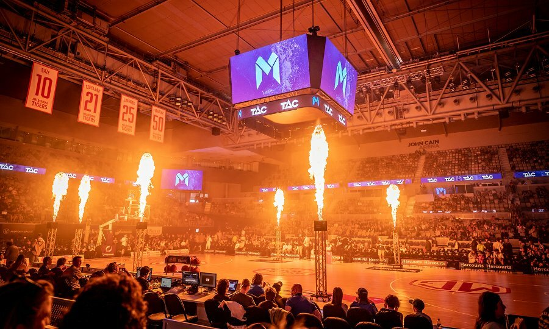
Lace up your sneakers and practise your cheer, because Melbourne's sporting calendar is packed with events, including the AFL Grand Final and Twenty20 cricket.

Get the latest sports news, live cricket scores and in-depth coverage of Cricket, Football, NBA, NFL, WWE, F1, Tennis, and more on The Times of India. Stay updated with breaking…

India at Asian Games 2026 Day 10: Today's medal tally, results and Live Updates: Real-time news about India's Day 10 campaign at the 2026 Asian Games across all events…
<strong>Unbeaten Italy advanced to the World Baseball Classic quarter-finals by routing Mexico 9-1</strong> on Wednesday, allowing the fancied collection of United States stars…
Follow any political information, cultural, sporting and live streaming on RFI. The latest information, news and events in France, Europe and around the world.

European football's governing bodyUEFAsaid Thursday it would boycott theWorld CupshouldFIFApress ahead with its private investor plan....

Australian Football League. All the latest AFL news, AFL video, results, scores and information

Newsletters · Sign in · Minute-by-minute report: The Wallabies meet the world No 1 Springboks in a big test of Les Kiss’s side’s credentials. Join Jonathan Howcroft for updates ·…

Sky Sports favourite left emotional after being granted rare honour by F1 team
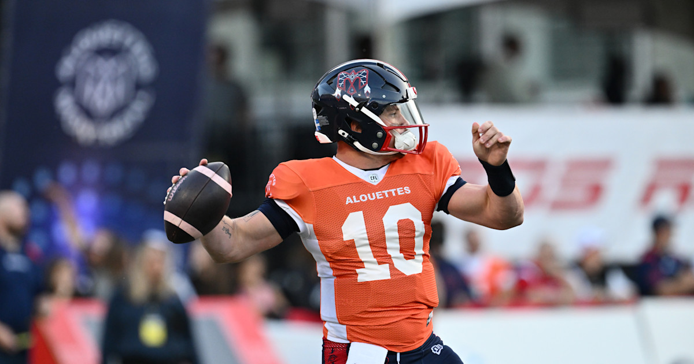
LatestMy News · Game Day · <strong>3 keys to victory for Ottawa, Calgary in Week 17</strong> · Game Day · 3 keys to victory for Edmonton, Hamilton in Week 17 · Injury Reports ·…

Bem vindo ao Site Oficial do Sporting Clube Portugal. Aqui poderá encontrar toda a informação relativa ao Clube.
READ MORE
MMA · Yahoo Sports AM · NCAAB · NCAAW · Golf · NCAAF · Tennis · College Sports · Fantasy Sports · Motorsports · WNBA · Sportsbook · Boxing · USFL · Cycling · Olympics · Horse…
READ MORE
<strong>Sporting Lisbon were crowned Portuguese champions after a 2-0 win over Vitoria Guimaraes on Saturday</strong>, as both the title and relegation battles were decided on…
READ MORE
<strong>Craig Bellamy's side take on Portugal in Lisbon on Thursday, 24 September</strong>.
READ MORE
Jorge Jesus provides update ahead of UEFA Nations League clash Cristiano Ronaldo is set to start for Portugal against Wales as Jorge Jesus' side commence their UEFA Nations…
READ MORE
Explore the leading Portuguese newspapers online, including major national dailies, regional city press, sports newspapers, and trusted digital news portals. Find breaking news…
READ MORE
<strong>Multiple shootings and stabbings across Lisbon in 72 hours</strong>. Eight injured, calls for 200 new PSP officers.
READ MORE
... Sport Lisboa e Benfica's official games through October 4, 2026. <strong>Vasco Vilaça is the world champion</strong>! A Benfica triathlete is the first Portuguese…
READ MORE
Follow the Calendar and Results of the Sport Lisbon and Benfica games. Information on past and upcoming club matches in football and various modalities
READ MORE
Breaking Netherlands news and in-depth analysis from the best newsroom in sports. Follow your favorite clubs. Get the latest injury updates, player news and more from around the…
READ MORE
More news stories daily than any other English news source about the Netherlands.
READ MORE
Champions League · Lionel Messi · Cristiano Ronaldo · EA FC 25 · Wrexham · Boxing · Tyson Fury · Anthony Joshua · Oleksandr Usyk · Mike Tyson · Jake Paul · Logan Paul · UFC ·…
READ MORE
All the news about Guadalajara México published in EL PAÍS. Information, articles and breaking news about Guadalajara México
READ MORE
Get updates on the latest Guadalajara action and find articles, videos, commentary and analysis in one place. TNT Sports is your go-to source for Tennis news.
READ MORE
Watch live shows and highlights 24/7. Yahoo Fantasy FootballThe award-winning podcast with Josh Norris and Hayden Winks has a new home. Yahoo Fantasy ForecastFantasy Football…
READ MORE
Información de todo tipo de deporte incluyendo Fútbol Mexicano, Béisbol, NBA, Básquetbol, Fútbol Americano, NFL, Tenis, Boxeo, automovilismo y Golf.
READ MORE
Latest Mexico news, schedule, stats, depth chart, roster, injuries, transactions and more from USA TODAY Sports.
READ MORE
Tennis Today Emma Raducanu vs Janice Tjen prediction and betting tips - August 27, 2025 Tennis Today Novak Djokovic vs Zakary Shvaida prediction and betting tips - August 27,…
READ MORE
EMPEROR'S CUP JFA 106th All Japan Football Championship [3rd Leg] Here are the highlights from the GAMBA OSAKA vs. Tokushima Vortis. The match was held on Wednesday,…
READ MORE
<strong>Takuma Inoue defends his WBC bantamweight title against Tenshin Nasukawa in Tokyo on September 27.</strong> The rematch caps a weekend featuring Zuffa Boxing's UK…
READ MORE
<strong>Yokozuna Onosato defeated title rival ozeki Aonishiki</strong> in an emphatic fashion to capture his first title in a year at the Autumn Grand Sumo Tournament on…
READ MORE
NEW YORK (Kyodo) -- The Los Angeles Clippers on Monday announced the signing of Japan men's national basketball team star Rui Hachimura.U.S. sports ne Full article · Runners…
READ MORE
<strong>Roma and Milan are preparing to reignite their interest in Madrid attacker Endrick</strong>, as per Football Italia .
READ MORE
SERIE A WOMEN, COMO 1907 vs. <strong>AC MILAN</strong>: MATCH PREVIEW
READ MORE
One month ago, <strong>Roma qualified for the Champions League: 10 (+1)</strong> Roma fans share what they felt that day!
READ MORE
Italian sports newspapers and news sites covering football, motorsport, cycling, tennis, and other major events.
READ MORE
Stay up‑to‑date with the latest Dublin news, including indepth features, local event reports, community updates and city developments. Brought to you by Ireland’s quality news…
READ MORE
Conor McGregorUS Ambassador to Ireland Edward Walsh has been slammed for posting photos in the disgraced MMA fighter's bar in Dublin
READ MORE
The 7-0 Offaly boxer faces Belfast's Ruadhan Farrell (8-2-1) for the BUI Irish super-bantamweight title in the main event on JB Promotions' Judgement Day card ...…
READ MORE

Skip to main content · Sport · SoccerBoxingRugbyGolfSnookerMMAAthleticsMotorsport · <strong>England assessing fitness of Declan Rice ahead of Panama clash</strong> · Scotland’s…
READ MORE
The latest Irish and international sports news from The 42
READ MORE
Khamzat Chimaev vs Sean Strickland: Former champion reacts to Imavov title shot · One fight left on UFC deal, but Michael Page knows his title route: ‘It's gonna be…
READ MORE
Informasi dan berita olahraga terbaru tentang sepakbola, moto gp, basket, tenis, bulutangkis, formula 1, fakta, gosip dan foto video.
READ MORE
Ikuti perkembangan olahraga Surabaya terbaru, hasil pertandingan, jadwal, klasemen, prestasi atlet Indonesia, serta berita sepak bola, bulutangkis, basket, MotoGP, Formula 1, dan…
READ MORE
Indonesia · Category · Sports · Buy us a coffee · Google News · Aug 21 · Persija Jakarta Rekrut Mantan Top Skor Liga Swedia - detikSport · Share · Google News · Aug 21 · Hasil…
READ MORE
Sports · Newsletter New · Mobile Apps · Images · The Jakarta Post Group · Tenggara Strategics · B/NDL Studios · Magdalene · Subscribe LOGIN · Search Close · Popular discontent is…
READ MORE
Sports · Newsletter New · Mobile Apps · Images · The Jakarta Post Group · Tenggara Strategics · B/NDL Studios · Magdalene · Subscribe LOGIN · Search Close · Popular discontent is…
READ MORE
Explore the latest news articles tagged with 'Bengaluru sports'.
READ MORE
From 2018 to 2024, four Indian Super League franchises have become the Kalinga Super Cup winners. Find out the detailed list of the inter-league tournament's winners in this…
READ MORE
SPORTS News · Cricket · Football · Tennis · F1 · Others · In an inspiring turn of events, Ashmita Chaliha triumphed by clinching her first BWF World Tour title in a thrilling…
READ MORE
Check out the latest news in Bengaluru on The Times of India with a wide range of topics including Bengaluru’s politics, Bengaluru crime, sports, fashion, movies, culture, dance…
READ MORE
Hon'ble Governor of Karnataka, Shri Thaawarchand Gehlot, flagged off the 18th edition of the TCS World 10K Bengaluru · Bangalore | Written by: BNN | Updated: 26-04-2026 |…
READ MORE
Delhi News - Find latest New Delhi news and Headlines from Delhi City. Also check out latest news belongs to Delhi crime, Delhi education news, Delhi real estate, Delhi politics…
READ MORE
Asian Games Live, September 27: <strong>India's badminton campaign ends at the Asian Games 2026</strong>. PV Sindhu loses to Chen Yu Fei on a day where India lost 4…
READ MORE
Delhi News Today: Read Latest New Delhi News Headlines, Delhi Breaking News Updates. Also Check out Local Delhi News Updates, Delhi crime news, education news, real estate news,…
READ MORE
<strong>India Under-19 outclassed arch-rivals Pakistan by 58 runs in a Super Six clash to seal a semifinal spot at the ICC U-19 World Cup</strong>. Young all-rounder Kanishk…
READ MORE
Mumbai, Pune dominated online orders for Modaks on Ganesh Chaturthi · Celebrate Ganesh Chaturthi 2026 with the vivo S2 5G and Other vivo Phones · Sports · See More · Formula 1…
READ MORE
Check out the latest news in Mumbai on The Times of India with a wide range of topics including Mumbai politics, Mumbai crime, sports, fashion, Bollywood, culture, industries,…
READ MORE
Explore the things you love · Log in to Facebook · English (UK) · Русский · Українська · Suomi · 中文(简体) · Deutsch · العربية · More languages…
READ MORE
Sports Digest, Singapore. 53,715 likes · 4 talking about this. Your Ultimate Destination for All Things Sports! 🌟🏆 Sportsnews || follow for latest updates || breaking news||…
READ MORE
Every new series brings with it a clean slate. India are all set to switch gears into ODI mode as We ... Mumbai Indians have announced that <strong>Lisa Keightley has decided to…
READ MORE
Stay updated with the latest Bayern Munich news and transfer rumors. Including match previews, lineups & player ratings.
READ MORE
Video, 00:01:32Man City fight back to snatch 'precious draw' at Bayern Munich
READ MORE
<strong>Der Berlin-Marathon ist nach der Absage von Sabastian Sawe um eine Attraktion ärmer, speziell bei den Frauen bleibt es aber ein außergewöhnlich hochklassiges…
READ MORE
Aktuelle Sport-News von FC Union, Hertha BSC, anderen Bundesliga-Clubs, Transfergerüchte zu anderen Vereinen und mehr.
READ MORE
Sei es beim Berlin-Marathon, beim Radrennen Velothon oder bei der Leichtathletikveranstaltung ISTAF, in Berlin können alle Sportler zeigen, wie gut sie trainiert sind.…
READ MORE
The 2027 German Masters is one of the most important snooker events in Germany and attracts fans from all over Europe every year.
READ MORE
<strong>Tigst Assefa verfehlt den Weltrekord beim Berlin-Marathon nur wegen einer Sehnenverletzung</strong>. Für den Streckenrekord reicht es dennoch.
READ MORE
Breaking news and world news from France 24 on Business, Sports, Culture. Video news. News from the US, Europe, Asia Pacific, Africa, Middle East, America
READ MORE
<strong>Les Bleus secure the win in Türkiye as Démbélé starts for France</strong>
READ MORE
Corporacion Deportiva Independiente Medellin page on Flashscore offers livescore, results, standings and match details (goal scorers, red cards, …).
READ MORE
Sunday’s riots at a football stadium in Medellín came after months of strife between team executives and fans ... Scientists want Colombia’s Ministry of Environment to release a…
READ MORE
Noticias de Medellín e información de última hora sobre la Alcaldía, movilidad, pico y placa, seguridad, calidad del aire, covid y los barrios.
READ MORE
<strong>59 people are injured in a clash between rival fans at the Colombia Cup final between Atletico Nacional and Deportivo Independiente Medellin</strong>.
READ MORE
En Qhubo Medellín encuentras todas las noticias de deportes, orden público y tendencias y farándula de Medellín, Colombia y el mundo. ¡Ingresa ya!.
READ MORE
<strong>James Rodríguez, es un futbolista colombiano que juega como centrocampista en el São Paulo Futebol Clube de la Serie A de Brasil</strong>.
READ MORE
Colombian international cable news channel based in Bogotá, broadcasting news from Colombia and the wider Americas. National news and talk radio network owned by Caracol TV, with…
READ MORE
Jhon Arias struck the only goal of the game in the first half as Colombia sealed a place in the last 16 where they will face Switzerland
READ MORE
The sprawling multi-sports complex, which overlooks Shenzhen Bay, is known as the 'Spring Cocoon' and will host this year's BJK Cup by Gainbridge Finals
READ MORE
Stadium: Shenzhen Universiade Sports Centre (Shenzhen) Capacity: 60 334 · SummaryOddsNewsResultsFixturesStandingsTransfers · Latest Scores · Scheduled · 2023 · China · Super…
READ MORE
Ten-man Paraguay clung on after Matías Galarza’s early strike to secure a famous win and ensure Turkey will go home at the end of the group stage
READ MORE
At the 61st Presidential Cycling Tour of Türkiye, Team Novo Nordisk athletes are transforming competition into advocacy. Drawing from personal experiences with Type 1 diabetes,…
READ MORE
Felipe Massa: It's great that Turkey is back on the Formula 1 calendar · Lukaku has caused a stir in Belgium! Decision on Victor Osimhen from Nigeria! Good news for…
READ MORE
Get the latest sports news, match previews, live scores, highlights, podcasts, and videos across all sports on <strong>SABC Sport</strong>.
READ MORE
Plenty for the Proteas to ponder as Australia and England get back to Test action ahead of tours to South Africa this summer · By Stuart Hess · Today in SA sport history: August…
READ MORE
<strong>The Brazilians have sent a clear message to their domestic rivals following a dominant display in the recently concluded transfer market</strong>. The Pretoria club…
READ MORE
While Temba Bavuma and David Miller scored impressive centuries during the Pink ODI against Australia, Cricket South Africa raised vital funds and awareness for the Charlotte…
READ MORE
Pretoria South Africa – September 2026 – Global sports company PUMA and Netball South Africa today unveiled the new Home and Away kits for the men’s and women’s teams for the…
READ MORE
<strong>Argentina will have a chance to defend its World Cup title after defeating England 2-1 in the semifinal</strong>. This is the second time in a row Argentina has reached…
READ MORE
<strong>Argentina name Lionel Messi in their squad for a friendly against Benin in October in a match which is set to be the forward's farewell to international…
READ MORE
Fifa has begun disciplinary proceedings against Argentina over the Falkland Islands banner displayed after their World Cup semi-final win over England
READ MORE
The World Cup final ended with a brawl involving a number of Argentina players and staff members.
READ MORE
It was a busy Friday for Corinthians supporters, with tighter federal rules on online betting, a sponsor renewal and two starters in Brazil’s 1-1 draw with Australia.New federal…
READ MORE
Sports Secion - The Chosun Daily is an English-language news website that provides a selection of articles from The Chosunilbo, a major Korean newspaper, and its affiliate, The…
READ MORE

Shenzhen news, restaurants, apartments, jobs, events and the English directory of Shenzhen, China. Live since 2001.
READ MORE
A rare two-headed calf with four eyes and two mouths has drawn attention in Guizhou, China. When someone suggested livestreaming it for money, the owner refused, saying, “It’s a…
READ MORE
To make sure you always see the latest travel tips, news, and destination guides from us, click the “Add us on Google” button and check Frommers.com ... Check local listings or…
READ MORE
Explore news, culture, lifestyle, and city stories for Shanghai's international community.
READ MORE
Resource for news about the city, includes latest political, business, social, and sporting events, while providing international coverage, and access to information and sites…
READ MORE
The latest news, analysis and opinion on Beijing. In-depth analysis, industry insights and expert opinion.
READ MORE
<strong>China plans to expand the scale of its sports industry to at least 7 trillion yuan (about US$1 trillion) over the next five years</strong>, turning to sporting events,…
READ MORE
Sports · <strong>2027 Beijing E-Town Humanoid Robot Half Marathon</strong> · 2027-04-18 - 2027-04-18 · Beijing E-Town Street Circuit Rounds of 2026 GT World Challenge Asia ·…
READ MORE
The second-edition of the five-day competition kicked off in Beijing, China, on Saturday. ... The robot ran the distance in 9.39 seconds at the World Humanoid Robot Games in…
READ MORE
Sportsnet.ca · More · Report: Stephen Curry signs two-year extension with Warriors · 1 hour ago · See more headlines & perspectives · Sign in to get news based on your…
READ MORE
The Brazilian had thought his time at Barcelona was ending but now, he tells Sid Lowe, he is thriving as captain and the most potent No 9 in Europe
READ MORE
<strong>Kim Birrell has won an all-Australian final in Seoul to claim her first WTA-Tour level title, while another Australian has lost the final in Singapore</strong>. ...…
READ MOREStay updated with the latest Canada news and analysis. Including match previews, lineups & player ratings.
READ MORE
Fan easier, fan faster and fan better with Bleacher Report. Keep up with the latest storylines, expert analysis, highlights and scores for all your favorite sports.
READ MORE
<strong>Dobson sustained the injury Saturday against the Blue Jackets after blocking a shot that hit his thumb</strong>. The two-week reevaluation period means he'll also…
READ MOREThe official National Hockey League website including news, rosters, stats, schedules, teams, and video.
READ MORE
Assistant hitting coach Hunter Mense is leaving the team to take a job with the San Francisco Giants, Sportsnet confirmed on... ... The Montreal Alouettes are heading back to the…
READ MORE
Montreal's financial window to make a big splash is wide open with the addition of two more affordable deals for useful players.
READ MOREThe official National Hockey League website including news, rosters, stats, schedules, teams, and video.
READ MORE
Unlock full digital access to the Vancouver Sun SUBSCRIBE NOW Unlock full digital access to the Vancouver Sun SUBSCRIBE NOW ... This advertisement has not loaded yet, but your…
READ MOREHenrik Sedin’s son scores his first international goal for Canada · It runs in the family 👀⚽️🇨🇦 · Preston Hodgkinson · Aug 2, 2026 · Events ·…
READ MOREToronto Sports News. 1,283 likes · 1 talking about this. This is a page for all Leafs, Jays, Raptors and TFC fans! By providing news and rumours, Toronto Sports News is your one…
READ MOREIt wasn’t a memorable game on the scoresheet for the Toronto Maple Leafs on Saturday; however, it was for top prospect Gavin McKenna.The Maple Leafs lost to the Montreal…
READ MORE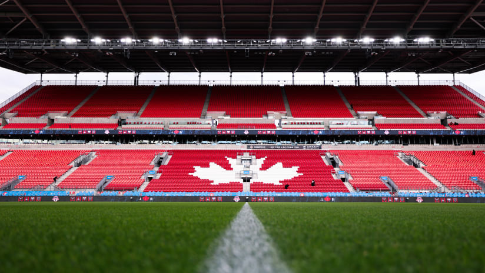
<strong>Toronto FC (6W-7L-11T, 29 points) extended their unbeaten run to seven matches</strong> with a dramatic come-from-behind 2-1 victory against Supporters’ Shield-leading…
READ MORE
<strong>Toronto came away with just its second series victory in Tampa Bay in its last 13 attempts</strong>.
READ MORERio de Janeiro, Brazil's most popular city, has hosted World Cups and the Olympics, and <strong>next year the NFL will finally make its way there</strong>. Maracanã Stadium…
READ MOREGet top and latest Rio De Janeiro News - Read Breaking Rio De Janeiro News and Rio De Janeiro News Headlines. WION is leading news channel worldwide get all latest breaking world…
READ MORE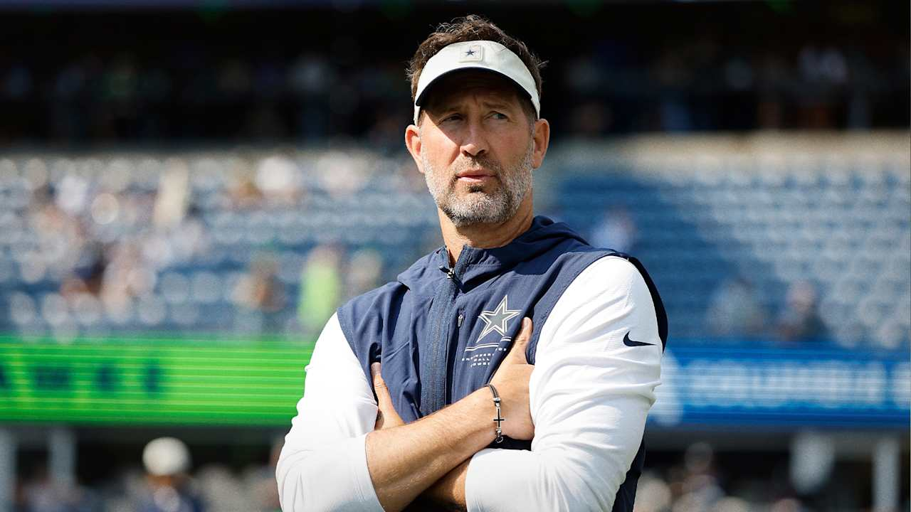
As the Cowboys prepare to meet the Ravens in Brazil, the playing surface in Rio is making headlines, and Dallas is addressing them after their win over the Commanders.
READ MOREThe NFL will play its first regular-season game in Rio de Janeiro as the Baltimore Ravens face the Dallas Cowboys at the Maracana Stadium, live on Sky Sports from 9.25pm Sunday;…
READ MORE
Sao Paulo Futebol Clube page on Flashscore offers livescore, results, standings and match details (goal scorers, red cards, …).
READ MOREThe Chiefs' season began against the Los Angeles Chargers in Brazil. Back in Kansas City, the Mill Creek Park fountain was dyed red. Fans gathered with cheerleaders and the…
READ MOREThis page lists major Brazilian newspapers, business finance outlets, sports news portals, and official news agencies with reliable coverage of politics, economy, society,…
READ MORE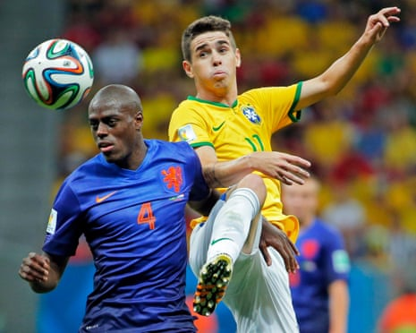
Brazilian forward is another rare and frazzled talent who has become a footballing toxic financial product, too costly to keep, too costly to sell · Thousands of São Paulo FC…
READ MORE<strong>São Paulo</strong> · Vitória · Brasileirão · Mais jogos · Gabriel Sá defende saída de Arboleda do <strong>São Paulo</strong>: 'Encerrar ciclos' 24/09/2026 19h29…
READ MORE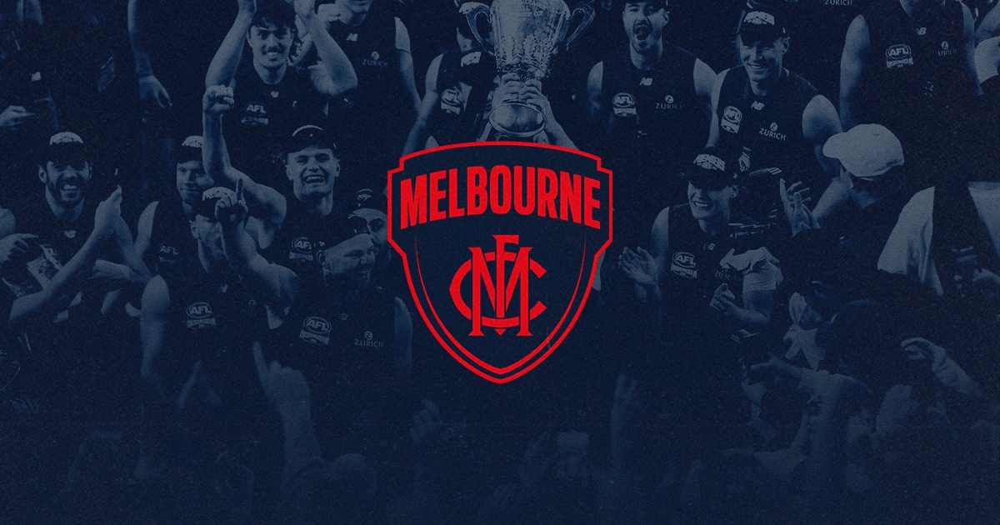
Melbourne's undefeated start to the season has continued against Carlton, lifting the Demons above North Melbourne on the ladder
READ MORE🔔+34Any country. Any topic. Pick countries on the world map and get breaking news alerts in your browser — free, no app.Turn on alerts →× ... The threat of rain did little to…
READ MORE7NEWS brings you the latest Melbourne Victory news from Australia and around the world. Stay up to date with all of the breaking Melbourne Victory headlines & results.…
READ MOREPublished: Wed 23 Sep 2026 at 1:09pmWed 23 Sep 2026 at 1:09pm/Source: ABC News/Topic: Terrorism · As Melbourne prepares to host two non-Victorian teams in this weekend's AFL…
READ MORE
View a list of upcoming sports events, concerts and recent results in Melbourne.
READ MORE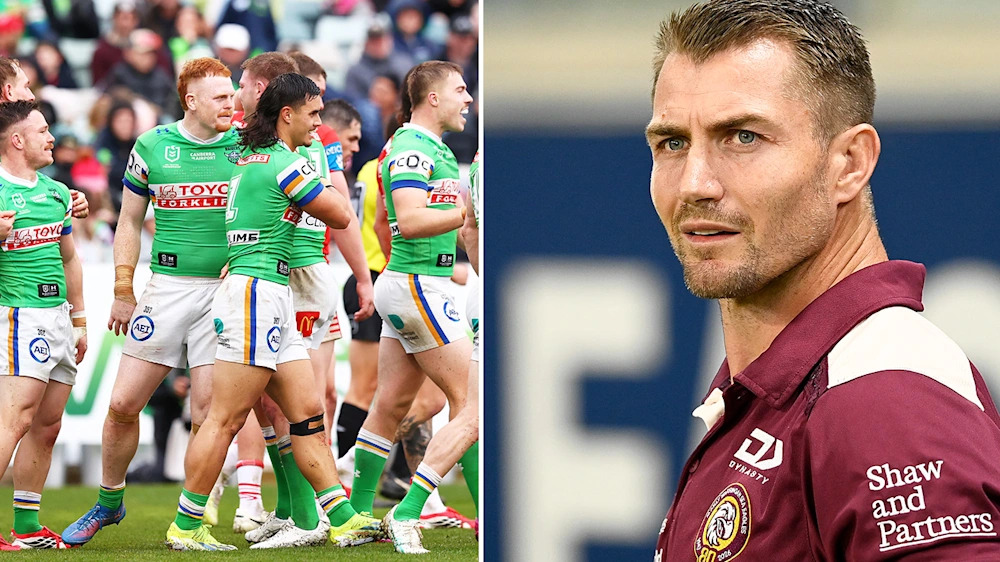
<strong>The triple All-Australian is set to depart after 15 seasons at the Giants</strong>.
READ MORE
<strong>Australian striker Mo Toure sends home another goal for Norwich</strong>.
READ MOREThe eighth edition of the Golazo 50 is here! Julián Álvarez claimed back to back top spots but with the Atlético Madrid forward no longer eligible, who will be crowned […] · The…
READ MORE
Latest news, sport, business, comment, analysis and reviews from the Guardian, the world's leading liberal voice
READ MORE

England seek to do what no side has ever done - beat Mexico on their home soil in a World Cup match.
READ MORE
Mexico · Marcos OlveraDavid Nelson12/05/2026 12:12 ·
READ MORE
... Redacción Deportes, 11 jun (EFE).- <strong>La selección mexicana venció este jueves en el estadio Azteca el miedo a no ganar el partido inaugural en un Mundial al imponerse a…
READ MORECompartilhar nas redes sociais "Sports: Neymar Bids Farewell to the World Cup in His Most Melancholy Campaign, With Less Than One Half Played" The No. 10 came off the…
READ MORE
China’s Weng Hongyang battled past Singapore's Loh Kean Yew 21-18, 11-21, 21-17 in a three-game thriller, reaching the quarterfinals at the 2026 BWF China Masters in…
READ MORE
Discover the latest sports news from China and around the world.
READ MORE
Sun Yingsha, Matsushima crowned singles champions at WTT U.S. Smash 2026-07-06 15:21 · Highlights of women's single final at WTT United States Smash 2026 2026-07-06 15:06 ·…
READ MORE
Get the latest news and photos on China sports, sport games, sport markets, sport stars, including Yao Ming, Liu Xiang, and Li Na from Chinadaily.com.cn
READ MORE
Get stories and pictures of soccer, basketball, tennis, motor racing, sports stars and the Olympic Games from the China Daily and chinadaily.com.cn.
READ MORE
Indonesia’s U-22 men’s soccer team will be in Group C with Singapore, Myanmar and the Philippines, with the first match of the group slated for Dec. 5. 3 months ago ... KOI and…
READ MORE
<strong>Jonatan Christie is the last Indonesian standing at the India Open 2026</strong>. He faces Loh Kean Yew in the semifinals after defeating Christo Popov · 2025 Africa Cup…
READ MORE
Get the latest sports news, live scores, match updates, schedules and results for cricket, football and more. Follow every game with Sportstar.
READ MORE
Stay Up To Date With The Latest Sports News & Updates From The World Of Cricket, Football, Tennis, Badminton & Much More At The Hindu
READ MORE
Asian Games 2026: Anahat, Abhay win silver as India's wait for a...
READ MORE
Get Latest Sports News And Updaetd National & International Sports News. Games And Sports All At One Desk At - The Hans India.
READ MORE
Other Sports · Gallery · Asian Games 2026 · IPL 2026 · Archives · More > 3 min read · 21 minutes ago · Chess Olympiad: India Men Win Silver, Women Claim Bronze · 31 minutes…
READ MORE
VideoRuns and records galore as England beat India to seal ODI series win
READ MORE
Indian boxer Pooja Rani has worked on her coordination and gained a lot of lower body strength in the last two years. Here's how she's gearing up for the games · His…
READ MORE
The Union Minister, who arrived in Mizoram on a three-day visit visited the Sports A... ... In Men’s Cricket, India defeated Afghanistan by 7 wickets in the first T20…
READ MORE
India vs West Indies Live Score, 1st ODI: Justin Greaves and John Campbell launch stunning assault, 85 without loss
READ MORE
Korea's men's handball team says its speed and organization can overcome Middle Eastern rivals at the Aichi-Nagoya Asian Games. ... Shin Dong-guk stopped favored Park…
READ MORE
<strong>South Korea beat Japan 67-57 to win Asian Games men's basketball gold</strong>, its first title in 12 years and first won abroad since 1982....
READ MORE
News Focus · Sports · Policies ... 3rd straight China Masters · Badminton supernova <strong>An Se Young has won her third straight women's singles title in the China…
READ MORE
Video, 00:00:59Oh Hyeon-Gyu scores winner for South Korea ... <strong>South Korea fight back to beat Czech Republic</strong>.
READ MORE
Provides Sports news such as Golf, Baseball, Football, and General.
READ MORE
#Asian Games Cho, Kim surprise gold rush with South Korea's 1st Asiad double related article <strong>Team South Korea had its first two double gold medalists at the…
READ MORE<strong>Gamba Osaka lifted the AFC Champions League Two 2025/26 trophy on Saturday (Sunday morning, Japan time), after defeating Al Nassr Club 1-0 in the final in…
READ MORE
Breaking news about Sports by The Asahi Shimbun. The Asahi Shimbun is widely regarded for its journalism as the most respected daily newspaper in Japan.
READ MORE
Sota Fujii (23) defended the Oi title for a sixth consecutive year after winning Game 6 of the best-of-seven match at the Shogi Kaikan in Tokyo, with Challenger Takuya Nagase…
READ MORE
BBC Sport · Premier League joins call for Fifa reforms · Attribution · Football · Posted · 1 day ago1d · AC Milan v Lecce · Attribution · European Football · Posted · 6 days…
READ MORE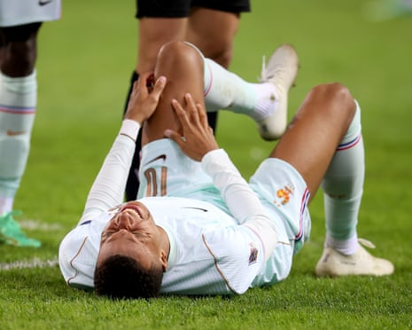
Newsletters · Sign in · Outstanding footballer who won two European Cups with Internazionale and a World Cup runners-up medal with Italy · The presence of the Italian World Cup…
READ MORE
CBS Sports has the latest Serie A news, live scores, player stats, standings, fantasy games and projections on the Italian Serie A.
READ MORE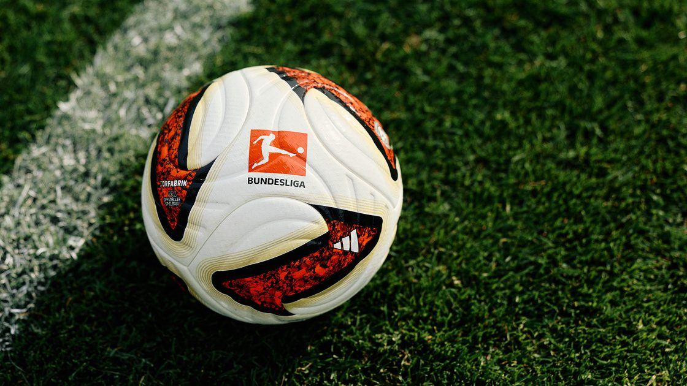
Choose who you would like to see Jürgen Klopp start in his second game as Germany coach against Greece.25.09.2026 · Stay up to date with how the Bundesliga and Bundesliga…
READ MORE
<strong>A new-look Germany gave Jürgen Klopp and Germany fans reasons to be optimistic about the future as they draw in Amsterdam in the 2026/27 UEFA Nations League</strong>.
READ MOREPublished on September 17, 2026, at 7:55 pm (Paris) Le Monde with AFP ... The French Table Tennis Federation announced on Thursday that <strong>France will host the 2027 and 2028…
READ MOREFind all the latest articles and watch TV shows, reports and podcasts related to Football on <strong>France 24</strong>
READ MORE
<strong>All the latest from the 2026/27 league phase</strong>. ... We shine European football's floodlights onto the foundation of the game, celebrating the joy of…
READ MORE
The Brazilian had thought his time at Barcelona was ending but now, he tells Sid Lowe, he is thriving as captain and the most potent No 9 in Europe ... Liverpool have appointed…
READ MORE
Germany men’s head coach Julian Nagelsmann has extended his contract through to the 2028 European Championship. Nagelsmann last extended his contract with the DFB (German FA) in…
READ MORE
Latest news and headlines from Australia and the world
READ MORE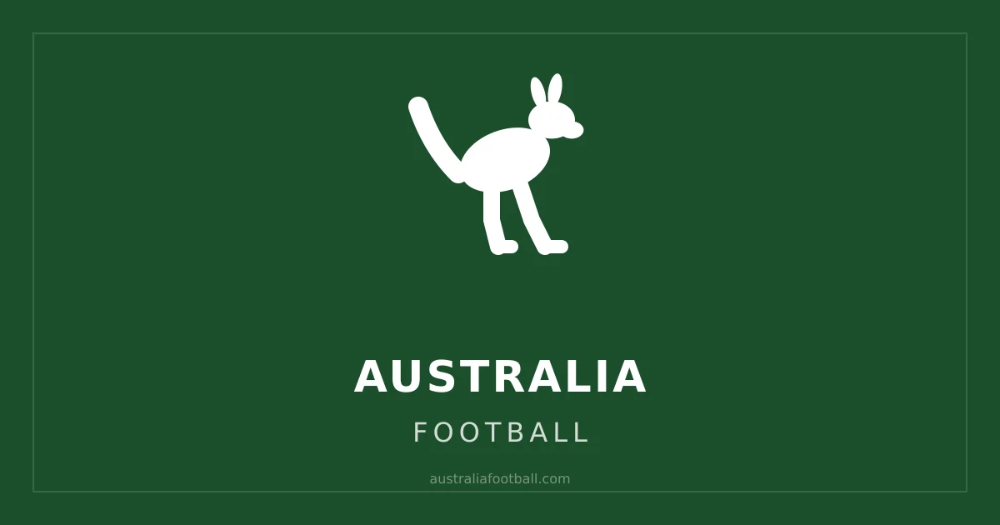
1 week ago - The unexpected day jobs of Australia's female footballers - ABC.NET.AU · 1 week ago - Spanish shot-stopper puts pen-to-paper on new Melbourne City deal -…
READ MORE<strong>Australian football is back on SBS</strong>, with the second season of the Australian Championship set to kick off in October.
READ MORE
Former Australian Test batsman David Boon will take over as Interim Chair of Cricket Australia after former NSW premier Mike Baird announced he would stand down after the…
READ MORESport news, live scores, features, analysis and photos from the world of sport. Comprehensive coverage of AFL, cricket, football, rugby league and rugby union. Audio interviews.…
READ MORE
Stay up to date with the latest sport news, live updates and breaking stories from 7Sport, AFL, Cricket, Olympics, NRL, Soccer and more with 7NEWS.
READ MORE
<strong>Australia added six gold medals to their tally in Glasgow</strong> after the pool prowess continued, with a mammoth comeback to competition for Sam Williamson.
READ MORE
<strong>Canada scored four PP goals to down the U.S.</strong>
READ MORE
México · 대한민국 · España · ไทย · United Kingdom · United States [Español] Việt Nam · About Us · Careers · Your Privacy Choices · Terms of Use · Privacy Policy · Cookie Policy ·…
READ MORE
How do all 32 teams in the NFL stack up after Week 2? Here are The Sporting News' updated NFL power rankings. ... How Jaxson Dart's MCL injury compares to Jordan Love,…
READ MOREGet all of the latest UK Sports news from Express and Star. Providing a fresh perspective for online news.
READ MOREAll sports · WRC · WRC Home · Calendar · Standings · Laver Cup · Alcaraz doing things 'even Federer and Murray didn't do' 14 minutes ago · UEFA Nations League · an…
READ MORE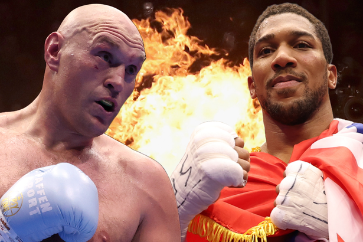
Read the latest Sport news, including Football, UFC, Boxing, Racing and more. Get the best match reports, insight and live covereage from the Mirror Sport team.
READ MOREOne-of-a-kind soccer destination combines play, culture and community as Canada prepares for a landmark summer in the sport CALGARY, AB, June 11, 2026 /CNW/ - SportChek today…
READ MORE
Leafs, Raptors, Blue Jays, TFC and Team Canada: find sports news, scores, standings and analysis from reporters and columnists on thestar.com.
READ MORE
WATCH BELOW : On the latest episode of No Holds Barred , Postmedia’s Rob Wong speaks with NXT Superstar Arianna Grace about growing up in Mississauga, her life before wrestling,…
READ MORE
The Globe and Mail Sports section provides sports news, post-game analysis, in-depth features and video on Canada's teams. Find breaking sports news on baseball, football,…
READ MORE
Many of the kids in his African Youth Sports Academy come from low… ... CALEDON - Ben James certainly knows how to make a splash. ... REGINA - The B.C. Lions are going from a bye…
READ MORE
Canada’s Leylah Fernandez defeated Talia Gibson in straight sets (7-6, 6-0) on Sunday to capture the WTA’s Singapore Tennis Open.
READ MORE
Ohio State's Jeremiah Smith Delivers Heisman-Worthy Masterpiece vs.
READ MORE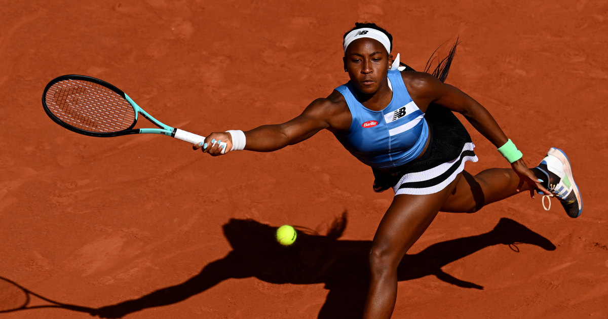
Get the latest sports news and videos on major leagues, college sports, Olympics, golf, plus expert analysis from NBC News and NBC Sports.
READ MORENFL.com keeps you up to date with all of the latest league news from around the NFL. Visit NFL.com's transaction hub for a daily breakdown.Sep 23, 2026 ... The NFL announced…
READ MORESkip navigation · Premier League · NASCAR · College Football · Men’s College Basketball · Player News · NFL Player News · NBA Player News · MLB Player News · Scores
Alarm bells for Justin Herbert and Drake Maye? More QB trades on the way? Growing injury concerns for the 49ers and Panthers? Here's the latest for Week 4.
Here are the W&W highlights from nearly 11 hours of classic — and not-so-classic — postseason baseball, beginning with an epic comeback.
6:24 · Super Bowl LX preview | 'Mike Vrabel has history of winning' 4:17 · Chiefs vs Eagles | Super Bowl 59 highlights · 6:59 · ICYMI: Super Bowl LIX | Eagles SOAR to…
Round-up of the sports news with live analysis and comments, plus extended interviews with the headline makers.
Follow the latest NFL news, fixtures and scores, with the best live coverage from Sky Sports
Champions Argentina need extra-time own goal to get past Cape Verde into last 16 · Soccer· ago · Argentina beat Cape Verde 3-2 in extra time thriller · Argentina beat Cape Verde…
The Treasury Committee has written to the chief executive of HM Revenue and Customs (HMRC) to ask about the tax implications of the Premier League's investigation into Manchester…
CBS Sports features live scoring, news, stats, and player info for NFL football, MLB baseball, NBA basketball, NHL hockey, college basketball and football.
The 36-year-old has played only five DP World Tour events - the last in 2023 - and teed off less than 24 hours after finishing second in the Tartan Tour's Duddingston…
England 27/09/26 11:24am · Liverpool 27/09/26 11:00am · The latest news and gossip in brief from Liverpool... Cricket 27/09/26 10:44am · Ben Duckett goes early for England as Sri…
00:00:16|3 hours ago · <strong>Shenzhen Open</strong> · 00:02:00|Yesterday at 15:49 · <strong>Shenzhen Open</strong> · 00:02:55|Yesterday at 15:00 · <strong>Shenzhen…
How will Don Mattingly set up Phillies for crucial Game 3 · GAMBLING PROBLEM? CALL 1-800-GAMBLER or 1-800-MY-RESET, (800) 327-5050 or visit gamblinghelplinema.org (MA). Call…
Plus, Jake Dickert and Wake Forest proved Steve right with a big upset win at Louisville, Super Kamario Taylor kept his great season going as Mississippi State takes down…
BBC Sport · England secure win over New Zealand with last-gasp try. Video, 00:08:27England secure win over New Zealand with last-gasp try · England extend their unbeaten run to…
will compete in this year's Le Mans 24-Hour race in June. The Briton, who raced for two years in F1 with Marussia, will drive for Nissan at the World Endurance Championship…
Stewart, 36, has played only five events on the main European circuit - the last in 2023 - and teed off less than 24 hours after finishing second in the Tartan Tour's…
Manchester City will argue in their Premier League appeal that the extra funding for their sponsorship deals between 2009 and 2018 came from the Abu Dhabi government and not the…
READ MOREAll combined WTA 1000 tournaments will award women and men equal prize money from 2027, the Women's Tennis Association said on Thursday, with the Italian Open and other major…
READ MORELewis Hamilton has launched an impassioned defence of Frederic Vasseur as Ferrari's team principal and suggested he would like to instead see other structural changes at the team.
READ MOREAhead of Saturday's Super League Grand FInal at Old Trafford, can you name all 11 clubs to make the end-of-season finale since its inception?
READ MOREArgentine football great Lionel Messi becomes the owner of Spanish second division club CD Eldense.
READ MOREAustralia recall Nic Maddinson for the first Test against South Africa after the New South Wales batter recovered from testicular cancer.
READ MOREThe Women's Tennis Association confirms all its combined 1000 events will award equal prize money from 2027 in a "major milestone".
READ MOREScotland head coach Sebastien Pocognoli has decisions to make as he searches for his first win in North Macedonia on Saturday.
READ MOREJack Combes and Alex Post tell BBC Sport about a "dream come true" as they look ahead to the 2027 Rugby World Cup opener against hosts Australia.
READ MOREThe crash, involving Lucas Gourna-Douath, follows a similar incident involving Sorba Thomas.
READ MORENico O'Reilly withdraws from the England squad for their final two Nations League games of the international break because of injury.
READ MORECan Super League's perennial nearly side Warrington Wolves get over the line and win a first Grand Final this Saturday?
READ MOREReal Madrid are keen on Bayer Leverkusen's Jarell Quansah, Liverpool are monitoring Club Tijuana's teenage midfielder Giberto Mora, plus more.
READ MOREEngland avoid defending champions Australia and world number one-ranked side India in the group-stage draw for the 2027 ICC Cricket World Cup.
READ MOREThe prime minister said he would be "really concerned" if the club's owners sell up after Premier League rule breaches.
READ MOREIrvin on Sanders, NIL, his sports talk podcast · 07:59 · <strong>Rams beat Giants</strong>, is Adams a future Hall of Famer? 08:03 · Saints QB Shough on beating Ravens, journey…
READ MORE<strong>NBC Sports NOW</strong> is the newest streaming channel from NBC Sports with 24/7 access to all the latest live sports, daily talk shows, biggest personalities and more.…
READ MOREPL Update: <strong>Brighton soar past Arsenal</strong> · 07:25 · PL Update: Brentford batters Chelsea at the Gtech · 03:57 · PL Update: Leeds run riot over Newcastle · 13:22 · PL…
READ MOREKyle Dvorchak discusses Jaylen Waddle's availability for Week 4 after he sported a walking boot on Sunday after the Denver Broncos' victory over the Los Angeles Rams.…
READ MOREMike Florio previews this Sunday's NFC matchup between the <strong>Arizona Cardinals (1-2) and the New York Giants (2-1)</strong> who are playing their third-straight game…
READ MORE<strong>Jameis Winston will be starting at quarterback for the Giants against the Cardinals on Sunday</strong>, but the team's move to add J.J.
READ MORE<strong>Mike Florio previews a heavyweight NFC matchup with the Philadelphia Eagles hosting the Los Angeles Rams</strong> as both Super Bowl contenders come off losses in Week 3.
READ MOREAhead of the Panthers-Lions showdown on Sunday Night Football, Mike Florio unpacks Jahmyr Gibbs' historic scoring pace and Bryce Young's sensational start to the season.
READ MOREMike Florio previews two struggling NFC teams facing off in Week 4 with the Baker Mayfield-less Tampa Bay Buccaneers hosting the Green Bay Packers.
READ MOREThe Titans added safety Kevin Winston Jr. to their injury report Thursday.
READ MOREPublicly, <strong>the Bears</strong> have said their "sole focus" for the site of their new stadium site is Hammond, Ind.
READ MOREIrvin on Sanders, NIL, his sports talk podcast · 07:59 · <strong>Rams beat Giants</strong>, is Adams a future Hall of Famer? 08:03 · Saints QB Shough on beating Ravens, journey…
READ MOREJets head coach Aaron Glenn gave safety Minkah Fitzpatrick a really good chance of returning to the lineup against the Bears this Sunday earlier this week and Fitzpatrick is…
READ MORE<strong>The 24-year-old Reese grabbed a league-high 12.1 rebounds a game</strong>, ranked third in the league with 1.8 steals a game in her third season and helped the Dream have…
READ MOREIn Week 3, the best pick was Ravens over Cowboys (especially since the wild-guess score prediction was 34-30). Worst pick: Buccaneers over Vikings. Flew too close to the sun on…
READ MORE(AP) Kevin Jennings shook off a pair of interceptions to lead No. 19 SMU Mustangs’s winning scoring drive, capped by Nick Reed’s 20-yard field goal with 21 seconds to play, to…
READ MOREThe <strong>Chicago Bears took down the Philadelphia Eagles</strong> on a big night for Case Keenum
READ MOREsite: media | arena: collegefootball | pageType: stories | section: | slug: ohio-state-iowa-prediction-picks-odds-spread-where-to-watch-live | sport: collegefootball | route:…
READ MOREWilson and the rest of her teammates should be much more comfortable at home in Game 3, while the Fever will not have their raucous crowd to fuel them. During the regular season,…
READ MORESamuel's second go-around as a 49er started with a 45-yard kickoff return to start the second half and a 15-yard touchdown catch that gave the 49ers a 24-7 lead early in the…
READ MOREThursday Night Football will pit the Cleveland Browns against the Pittsburgh Steelers, and the entire Week 4 NFL schedule presents you with an opportunity to collect nearly…
READ MOREDaniel Jones threw for 235 yards for the Colts last week, and both teams enter at 1-2. Claim $200 in bonus bets with a $10 bet by signing up for bet365 Sportsbook: The Bills play…
READ MORE… Prediction: Texans 24, Cowboys 21 · Dajani (Broncos +3): Maybe I'm the Broncos expert? When Denver was down 16-0 to the Rams last Sunday night, I was telling everyone not…
READ MORE<strong>The Steelers are coming off a 30-27 win over the Bengals</strong>, marking the first time the offense has scored 10 or more points in the first quarter in 98 games. The…
READ MORE<strong>The Americans are up 3-2 on the International side</strong> after a far less dominant effort than they put forward two years ago
READ MORE<strong>Colts 24-17 over Commanders</strong> Bills 30-20 over Patriots Ravens 27-13 over Titans Jets 23-16 over Bears Cardinals 20-17 over Giants Rams 27-20 over Eagles Packers…
READ MORE<strong>Bizarre win by Bills</strong>. The Bills turned the ball over five times in their 24-16 win over the Chargers. This win marked the first time since 1997 that the Bills…
READ MORE<strong>Deshaun Watson has four touchdowns and no interceptions in the past two games</strong> as the Browns are 2-1 for the first time since 2023.
READ MOREThe leaderboard is still all red, and <strong>the U.S. now has a 2UP lead or better in three matches on the course after Jackson Koivun's latest birdie on the par-4…
READ MORE<strong>Deshaun Watson has four touchdowns and no interceptions in the past two games</strong> as the Browns are 2-1 for the first time since 2023.
READ MOREsite: media | arena: nfl | pageType: stories | section: | slug: joey-porter-jr-trade-grades-steelers-cowboys | sport: football | route: article_single.us | 6-keys:…
READ MORECBS Sports HQ has the latest news and highlights from around the sports world. Get fantasy advice, game picks, live scores and more from the experts at CBS Sports. Stream for…
READ MORE<strong>An astonishing 83-ball 123 from Travis Head shattered England</strong>, who lost the first two-day Ashes Test since 1921
READ MORE<strong>England stormed back from 12-0 down against New Zealand to claim a historic 33-19 victory against the All Blacks</strong> and secure their 10th successive win
READ MOREMinute-by-minute report: <strong>The All Blacks claimed a 34th win in a row against Wales after an entertaining game in Cardiff</strong>. Daniel Gallan was watching
READ MOREThe Senate passed a sweeping bipartisan bill on Monday that would regulate college sports, an attempt to end “chaos” in an industry that has been upended by skyrocketing athlete…
READ MORELatest news, sport, business, comment, analysis and reviews from the Guardian, the world's leading liberal voice
READ MOREMitchell Starc took seven wickets before Ben Stokes inspired England’s fightback on a remarkable day in Perth
READ MORE<strong>Max Verstappen swept to victory at the Las Vegas Grand Prix</strong> in dominant fashion, enough as he crossed the line to keep him just clinging on to hopes of retaining…
READ MOREThe world’s top two players, Carlos Alcaraz and Jannik Sinner, will face one another in the climax of the ATP Finals in Turin
READ MOREThe minor premiers face Hawthorn with the gap between first and fourth on the AFL ladder having noticeably narrowed over the past decade
READ MOREAfter the chaos of the opening day and a bit, Ben Duckett and Ollie Pope gave themselves a couple of hours to remove the echoes of constantly crashing crockery from the game.…
READ MOREAfter an hour of relentless first‑strike tennis, it looked like Alcaraz might set himself apart with his variation. At 6-5 on Sinner’s serve, he followed up his first drop‑shot…
READ MOREShe played alongside Felix Auger-Aliassime in the mixed doubles championship, and joined Serena Williams and Anna Wintour in Arthur Ashe Stadium for an event honoring Roger…
READ MOREGood news for restocking the reservoirs but rather less so for <strong>dry-ball rugby</strong>. Had England played New Zealand 24 hours earlier it would have resembled a game of…
READ MORELatest news, sport, business, comment, analysis and reviews from the Guardian, the world's leading liberal voice
READ MOREThe game was in effect over when the 305lb defensive lineman Hyrum Vaeono recovered a fumble and ran 77 yards to set up a score that made it <strong>24-7.</strong>
READ MORE<strong>Carey and Marsh propel Australia to 322-9</strong> before rain ended South Africa’s chase at 145-4 – 45 short of the par score. South Africa win the ODI series 2-1
READ MORE24th over: <strong>Sri Lanka 112-8 (Malinga 2, Fernando 1)</strong> Out comes Asitha Fernando, who ducks into an 89mph bouncer, first ball, and is hit on the helmet. Thankfully…
READ MOREBrandon McNulty, a UAE Emirates teammate of Tadej Pogacar, succeeded him as world road race champion with an unexpected solo win in Montreal
READ MORE<strong>Jimmy, Vic, Ted and Tashan break down the Raiders 44-27 loss to the Colts and Defensive Coordinator Paul Guenther getting fired after the loss</strong>. The big story is…
READ MORENFL Week 6 Monday Hangover — Bengals slip past Saints, another uninspiring win for the Vikings, and more · Mike Sando joins Robert Mays on this edition of the Hangover to break…
READ MOREHost Danny Kelly is joined by The Athletic's James Maw and Tim Spiers to discuss <strong>Spurs' 3-2 comeback win away at Bournemouth on Saturday</strong>... The…
READ MORENunez, 24, was taken off at half-time during his side’s 4-1 victory over Brentford last Saturday, while Salah, 31, returned from a hamstring injury to score and provide an assist…
READ MORETo judge Liverpool’s prospects, it is instructive to take a glimpse into their recent past. After 17 games last season, Jurgen Klopp’s side were barely clinging to a European…
READ MOREAfter an awful showing against the Patriots, <strong>the Bills turned things around on offense during their Thursday night 24-18 victory over the Buccaneers</strong>. That…
READ MORE<strong>Notre Dame's inauspicious start to the season finally turned a corner, as the Irish dodged a pesky Cal team, 24-17</strong>. Pete and Matt react to Marcus…
READ MORETNT Sports has agreed a four-year deal with the Football Association (FA) to broadcast FA Cup matches in the UK.
READ MOREThe Pulse Newsletter 📣 | This is The Athletic’s daily sports newsletter. Sign up here to receive The Pulse directly in your inbox. Good morning! Turn on the lights today. Coming…
READ MORE<strong>Green Bay cruised to a 24-12 win</strong> on Monday night over the battered defending Super Bowl champions, led by AJ Dillon's two rushing touchdowns and Preston…
READ MOREThe school will open Neyland Stadium three hours before kickoff and offer deals on concessions for its remaining 2026 home games.
READ MORECoventry City have received a club-record fee from Sporting Lisbon for striker Victor Gyokeres. The Sweden international scored 41 goals in 97 appearances for Coventry over the…
READ MORELatest · •21d ago · Richard Deitsch · Senior Writer, Sports Media · The Chiefs-Packers window drew 24.37 million viewers for Fox on Sunday. That's the most-watched Sunday…
READ MOREAndrew Wiggins joins Jordan Poole in the health and safety protocols. That's now two starters out against the Kings on Monday. Two negative tests, 24 hours apart, are needed…
READ MOREEngland football news: Live updates, schedule and analysis of Thomas Tuchels Three Lions
READ MOREAsian swing of tennis season sees Carlos Alcaraz win in Tokyo, Brit Arthur Fery suffers defeat; In Beijing, Britains Cam Norrie knocked out but Harriet Dart, Sonay Kartal win;…
READ MOREThe Sky Sports Live Score Centre is your home for up-to-the-minute results from across the world of sports - covering the Premier League to The Ashes.
READ MORETyson Fury said he is already "winning 1-0" this weekend after revealing his wife Paris is expecting their third child just hours before he steps into the ring with…
READ MOREOn Wednesday, <strong>the Toffees signed Sporting Lisbon defender Ruben Vinagre</strong> on a season-long loan deal, making him their second summer signing under Lampard.
READ MOREDamar Hamlin suffered a cardiac arrest on field on Monday night; he spoke to his Bills team-mates over FaceTime on Friday after having his breathing tube removed; a Bills…
READ MOREGet the latest football news with Sky Sports
READ MOREDjokovic, who has already hoisted the trophy at Flushing Meadows three times before, has now equalled Federer's record of 31 Grand Slam men's singles finals and will…
READ MOREBaleba is expected to sign a five-year-contract with Manchester United and will undergo his medical in the next 24 hours. Transfer Centre LIVE! | Man Utd news & transfers🔴 ·…
READ MOREThe 35-year-old has been given permission to undergo a medical in the next 24 hours ahead of his imminent move to Stamford Bridge.
READ MORESebastian Sawe smashes sub-two hour barrier in 2026 win · Get the latest Sky Sports deals or stream with no contract
READ MORE4 hours ago · UK Championship · 6 minutes ago · UK Championship · 24/11/2024 at 08:40 · Join 3M+ users on app · Stay up to date with the latest news, results and live sports ·…
READ MORETNT Sports is your go-to source for sport news, results, commentary & highlights all in one place.
READ MORE<strong>Ferrari claimed a sensational win on their return to the Le Mans 24 Hours with their #51 car of James Calado, Antonio Giovinazzi, and Alessandro Pier Guidi</strong>.
READ MOREEurosport is your go-to source for breaking Tennis headlines. Catch the latest Harriet Dart - Katie Boulter news, highlights and watch free replays.
READ MOREWith the finals of <strong>Roland-Garros, 24 Hours of Le Mans, the UCI Mountain Bike World Series, the Criterium du Dauphine and MotoGP</strong>, it’s the Weekend of Champions…
READ MOREDay 6 at Wimbledon brings another host of intriguing match-ups and big names hoping to light up the play at the All England Club, including Andy Murray.
READ MOREHours of Le Mans · Winter Sports · Winter Sports Home · Calendar - Results · All Sports · Test Match · Aviva Stadium / 30.11.2024 / 15:10 · Ireland · Not started · - - Australia…
READ MOREEurosport is your source for the latest US Open women match updates. Get the full recap of Sorana Cirstea - Belinda Bencic, complete with stats and highlights.
READ MORETNT Sports is your go-to source for sport news, results, commentary & highlights all in one place.
READ MOREAnother decent chance here for Selby to compile a few points in the fifth frame. He leads the head-to-heads with <strong>Joyce 5-0</strong> and this looks like six coming up in…
READ MORETNT Sports is your go-to source for sport news, results, commentary & highlights all in one place.
READ MOREFor the Australian <strong>De Minaur</strong>, it took nearly three hours to overcome Danish world No.
READ MORE media.eurosport.com · 4 hr ago
media.eurosport.com · 4 hr agoThe build-up to the jewel in the year’s endurance racing crown – the 24 Hours of <strong>Le Mans</strong> of <strong>Le Mans</strong> – starts with an exclusive 30 minute…
READ MOREShould be a riveting few hours ahead. Boys on the baize at 11:30am GMT. 'Shot of the match!' – O’Sullivan dispatches long red to display confidence · It was a battle of…
READ MORE<strong>Ben Shelton won his second career ATP final when he defeated Frances Tiafoe 7-5 4-6 6-3</strong> in the US Men’s Clay Court Championship on Sunday.
READ MORETNT Sports is your go-to source for sport news, results, commentary & highlights all in one place.
READ MOREThe pair are battling for a place in the quarter-final and will wrap up the first day of action in Riyadh, which saw Ali Carter edge past Ding Junhui.
READ MOREStream the <strong>NCAA Women's Field Hockey Game</strong> Stanford vs. Virginia live from ACCNX on Watch ESPN. Live stream on Friday, October 2, 2026.
READ MOREWASHINGTON -- A bill that proposes to fix some of the biggest problems in college sports -- spiraling spending, constant lawsuits and a transfer portal run amok -- cleared a…
READ MORE— <strong>Colton Joseph hit Jacob Harris on a 72-yard touchdown pass with 1:13 to play and Wisconsin scored twice in the last four minutes to beat No. 13 Penn State 24-20 on…
READ MORESouth Carolina star edge rusher <strong>Dylan Stewart</strong> has been suspended indefinitely after he threw a punch at an Alabama player during Saturday's loss.
READ MORE<strong>The Cowboys kicked off Big 12 play Saturday night with a dominant second half for a 41-24 win at West Virginia</strong>. Drew Mestemaker threw for 389 yards and three…
READ MORE<strong>NFLNews Archive on ESPN.com</strong>.
READ MORECheck out the Watch ESPN schedule of live streaming games and programming happening right now, upcoming shows and replays.
READ MORE<strong>The Yankees' homegrown talent such as Ben Rice and Cam Schlittler led the way to help deliver a thorough two-game beatdown of the Red Sox in their AL Wild Card…
READ MORE<strong>Deshaun Watson has four touchdowns and no interceptions in the past two games</strong> as the Browns are 2-1 for the first time since 2023.
READ MOREA compilation of the latest sports news from ESPN.
READ MORELatest scorecard from the third ODI between South Africa and Australia at Potchefstroom.
READ MOREVideo<strong>Brentford stay unbeaten as they put three past Chelsea</strong> ... Leeds inflict heavy defeat on Newcastle to climb to third. VideoLeeds inflict heavy defeat on…
READ MORE<strong>West Ham United</strong> can move three points clear at the top of the Championship for at least a few hours when they visit Millwall on Saturday (12:30 BST).
READ MOREAll the football fixtures, latest results & live scores for all leagues and competitions on BBC Sport, including the Premier League, Championship, Scottish Premiership &…
READ MOREMan City fan Matt on BBC Radio 5 Live: "After listening to that, I think I need therapy now. It's escalated over the last few hours.
READ MOREPerfect 24 hours as Man City put pressure on Arsenal
READ MOREBuild-up to Real Madrid-Juventus, reaction to the Kevin Pietersen saga, Andy Murray wins in Rome, plus Yaya Toure gift ideas.
READ MOREBBC Sport · Image source, Getty Images · Published · 5 hours ago · Newcastle United midfielder Lewis Miley has returned to the club from England Under-21s duty because of an…
READ MORE"The last 24 hours have been tough" - Ipswich boss Gary O'Neil after his father passed away · Arsenal boss Mikel Arteta said his contract extension "will get…
READ MOREWe're just beyond the hour mark, and Wales remain in front. The hosts want a corner as Sorba Thomas' cross sailed through everyone before going behind. The last touch…
READ MORE<strong>Real Madrid are keen on Bayer Leverkusen's Jarell Quansah, Liverpool are monitoring Club Tijuana's teenage midfielder Giberto Mora</strong>, plus more.
READ MORE<strong>Sebastien Pocognoli's Hampden debut flips swiftly from special to sour as 10-man Scotland are outclassed by Switzerland in the Nations League</strong>.
READ MOREThe FCC said many sporting events previously available through free broadcast or traditional cable TV packages are now available only through standalone subscription streaming,…
READ MORE<strong>Surfing's elite world tour</strong> kicks off this week at Australia's Bells Beach with Stephanie Gilmore, Carissa Moore and Gabriel Medina returning to the…
READ MOREBERLIN, Aug 14 (Reuters) - A decision on which new sports will be included in the Los Angeles 2028 Olympics is likely to come in the next few weeks, the head of the International…
READ MORERuben Amorim said on Tuesday that no deal was in place for him to become the next manager of Manchester United after Sporting announced the Premier League club were prepared to…
READ MOREPolice said the athlete lost control of the vehicle he was driving and veered off the road into a ditch, travelling for about 60 metres along it before crashing into a large tree…
READ MOREIt’s Inside Track time. This week: an Italian title on the brink, ping pong fever hitting London, and Mint Juleps at the Kentucky Derby. Global Sports Editor Ossian Shine has…
READ MORE<strong>Nigeria have been awarded a 3-0 victory over Libya</strong>, and three vital points, from their scheduled Africa Cup of Nations qualifier earlier this month which they…
READ MOREThe Premier League season reaches its crescendo on Sunday with all 10 matches kicking off simultaneously in a final act packed with jeopardy at the bottom end of the table and…
READ MOREWith 50 days remaining until the start of the <strong>2026 World Cup</strong>, FIFA's last-minute sales phase re-opens on Wednesday with tickets for all 104 matches…
READ MORE<strong>Adriana Ruano Oliva became Guatemala's first Olympic champion</strong> after the accidental shooter won the women's trap event of the Paris Games on Wednesday.
READ MOREFind latest cricket news from every corner of the globe at Reuters.com, your online source for breaking international news coverage.
READ MOREMandatory Credit: Jamie Sabau-USA TODAY Sports Purchase Licensing Rights, opens new tab · Oct 8 (Reuters) - Kenyan Kelvin Kiptum shattered the men's marathon world record in…
READ MORETwenty four hours after he became the first Filipino to capture an <strong>Olympic gymnastics</strong> title with victory in the floor exercise final, Yulo doubled his Olympic…
READ MORE<strong>Le Mans</strong> 24 Hours winner Hulkenberg, 37, told reporters in Miami that being a father had not slowed him down and had in fact been only beneficial for his racing.
READ MOREGet the latest football and soccer news, including Premier League, Champions League, La Liga, and Serie A. Breaking updates, match reports & transfers.
READ MOREPartita combattutissima, con gli azzurri che prima prendono due traverse (Cisse e Comuzzo) e poi sbagiano un calcio di rigore con Koleosho. Alla fine la risolve all'ultimo…
READ MORETutti i risultati delle partite delle selezioni europee che danno il via alla terza giornata della fase a gironi di Nations League nella serata di giovedì 1 ottobre
READ MORETicket Trova qui i biglietti per i tuoi eventi preferiti · NEW. Leone e Ylenia: quando Gangnam diventa Foggia Style
READ MORESeveral exciting fixtures are scheduled for the opening day, with all eyes on Haaland as he faces Hojlund's Denmark.
READ MORESeveral Nations League fixtures are scheduled for today, with <strong>Roberto Mancini's Azzurri making their debut at 20:45</strong>, the same time as Robert…
READ MORE<strong>Terem Moffi è stato ceduto all'Amburgo</strong>. Dopo 24 gol con il club francese e un prestito al Porto, il centravanti nigeriano giocherà in Bundesliga.
READ MORE<strong>Nations League: primo tempo eccellente della squadra di Mancini contro un'avversaria sin lì inesistente</strong>. A segno Bastoni, Frattesi e Kayode. Yilmaz accorcia…
READ MORE<strong>A Calvisano gli Azzurrini – che avevano già battuto la Spagna nel primo test – vincono 24-19.</strong>...
READ MOREfootball news and results: Serie A, B, C, Champions League, and international leagues on La Gazzetta dello Sport.
READ MORE<strong>The Azzurri have conceded 3 goals in 2 matches, performing poorly against Belgium (0-2) and not well in Bursa (1-4).</strong> The issue is that Serie A teams typically…
READ MOREOur mini-European campaign has seen a surge of pride and quality: the Roman setback against Belgium's Red Devils was followed by a four-goal haul in Bursa, a Turkish home…
READ MORESegui in tempo reale Calcio, Basket, Moto GP, Tennis. Diretta gol e risultati di Serie A, Champions League, Wimbledon e tanto altro con la Gazzetta dello Sport.
READ MOREDuración del vídeo:2:48 min. Giuliano Simeone: "Dedico mi vida y las 24 horas del día a ayudar a este equipo"
READ MOREAFA wanted to bring together the world champions from Qatar 2022 to accompany the Argentine captain against Benin, but Roma decided that its two footballers should prioritize…
READ MORESimeone: "I hope to help Julián continue being as hugely important as he continues to be for us" · Why is Vinicius Junior’s girlfriend at the center of a social media…
READ MOREWhether viewers see the show as an entertaining look at a familiar sports culture or an uncomfortable endorsement of its excesses will probably depend on how seriously they take…
READ MORERedacción: ANGEL NAKAMURA LeBron James unveils dramatic bald look at TIME100 Sports Gala as NBA world awaits free agency decision
READ MOREVideo duration:7:27 min. Vladimir Guerrero Jr. speaks to MARCA after making '<strong>MLB: The Show 24</strong>' cover
READ MOREMichael Jordan: the greatest empire in sports · Las Vegas Aces. Why wasn’t A’ja Wilson ejected against the Indiana Fever? What WNBA rules say about entering the stands · LeBron…
READ MOREThe <strong>Kansas City Chiefs continued their winning streak on Monday night, securing their fifth consecutive victory by defeating the New Orleans Saints 26-13</strong> at…
READ MOREThe reasons behind Cristiano's anger with Jorge Jesus: will this be his farewell to Portugal · Cristiano Ronaldo's statement about his departure: "In due time, I…
READ MORERodman was there when Shelton defeated defending champion Carlos Alcaraz in a five-set quarterfinal that finished at 3:33 a.m., the latest ending in US Open history. Her own…
READ MORECheck out the latest football and other sports news. All the latest sporting information updated by the minute
READ MOREThe Indiana Fever player posted an ironic video after Wilson’s confrontation with a fan. She did not mention the Las Vegas star, but the reference to the finger that sparked the…
READ MORE<strong>Shelton defeated Hurkacz 6-3, 5-7, 7-6(3), 7-5 to reach the third round</strong>, surviving a match between two of the biggest servers in the draw. The contest lasted…
READ MOREDécouvrez la Une de l’Equipe et le journal du jour à travers le kiosque. Toutes les dernières éditions sont disponibles afin de ne rien manquer des dernières actualités sportives…
READ MORESuivez tous les directs de basketball, les résultats des compétitions en live et commentaires des journalistes de L'Équipe.
READ MOREAccédez à l'intégralité des articles et vidéos de L'Équipe et retrouvez l'actualité sportive du jour en sélectionnant la date de votre choix.
READ MORE<strong>C'en est fini de Perpignan en Challenge Cup</strong>. Le club catalan, sur son terrain, a été éliminé par le Racing (12-24).
READ MORETous Sports · Le programme TV omnisport du jour · 24 oct. 2024 · Foot, Ligue Europa · Où et quand voir Lyon - Besiktas ? 24 oct. 2024 · Foot, Ligue Europa · Où et quand voir…
READ MORE<strong>Paul Seixas et ses coéquipiers essaieront d'aller chercher, lors de la course en ligne programmée ce dimanche 27 septembre, le tant convoité maillot…
READ MORERetrouvez toutes dernières infos, les actualités sportives en direct et en continu sur L'Équipe.
READ MORE<strong>Toyota a renoué ce dimanche avec les ors de son récent passé en remportant les 24 Heures du Mans</strong>, avec l'équipage de la Toyota n°7 (Conway, Kobayashi, De…
READ MORE24 sept. Tous sports, Culture · Les documentaires sport à ne pas manquer cette semaine · 21 sept. Foot, Médias · Makelele et Giuly rejoignent Disney+ pour couvrir la Liga · 19…
READ MORE<strong>Tout comme les Championnats d'Europe de gymnastique artistique féminine commenceront jeudi à Zagreb (Croatie), jusqu'à dimanche</strong>. Nous vous proposons…
READ MOREToute l'actualité du rugby est à suivre en direct sur L'Équipe. Découvrez les dernières informations, résultats, classements des différentes compétitions
READ MORESuivez toute l’actualité des <strong>24 Heures</strong> du Mans 2026. Retrouvez toutes les infos de la 94e édition, les résultats et les classements des Hypercars.
READ MOREKamui Kobayashi passe la chicane Ford et celle du raccordement avec une prudence extrême, il réaccélère dans la ligne droite de départ et passe sous le drapeau à damier en…
READ MORE<strong>Cristiano Ronaldo n'a pas joué dimanche soir en Norvège (2-1) et a évité l'entraînement collectif mardi</strong>. Une séquence très commentée au Portugal. Mais…
READ MORELando Norris has explained why he felt compelled to add a public apology to the private one he offered Franco Colapinto after strongly criticising the Alpine driver for causing a…
READ MOREIreland head coach Scott Bemand hands first starts to Jane Clohessy and Niamh Gallagher for Saturday's Test with Japan.
READ MOREGeorge Russell says he "doesn't feel lost any more" as he seeks to end a difficult season on a high and chase down team-mate Kimi Antonelli's championship lead.
READ MOREArsenal defender Leah Williamson was at the heart of a bizarre incident in their Women's Champions League draw with Paris FC.
READ MOREManchester City are far from the first. The lure of glory and riches on the biggest stages have tempted plenty of other sports stars to break the rules.
READ MOREZoe Stratford, who captained England to World Cup glory a year ago, gives birth to a baby girl.
READ MOREWhile much of the pre-season chatter centred on Manchester City’s WSL title defence and how London City’s new-look squad might fare, Tottenham were quietly going about their…
READ MOREAdil Rashid and Sam Curran have been recalled to England's ODI squad after recovering from injury, but Jofra Archer will be rested for the tri-series against Pakistan and Sri…
READ MORELeg-spinner Mason Crane has the chance to play for England for the first time in eight years after being recalled for the one-day international tri-series in Pakistan.
READ MOREAmidst a raft of coaching changes in Scotland's youth set up, the under-21s delivered an eye-catching display, with Rangers winger Findlay Curtis at the heart of it.
READ MOREA tearful Kei Nishikori says he "kept fighting right to the end" as the former world number four ends his professional career at the Japan Open.
READ MOREEngland striker Ivan Toney pleads not guilty to assaulting a man at a Soho nightclub last year.
READ MOREFrom David Beckham and Gareth Bale to Jude Bellingham and Harry Kane, who are the best British exports this century?
READ MOREDrogheda United will travel to Turkey to face Trabzonspor at the 40,000-seat Papara Park as part of a special relationship between the two clubs.
READ MORETwo senior executives at different top-level Premier League clubs have told <em>Sky Sports News</em> they would be "staggered" and "amazed" if 15 clubs were prepared to vote to…
READ MOREFormer Manchester United and England defender Chris Smalling signs for Portuguese league leaders Porto.
READ MOREFormer Australia rugby international Nathan Charles, who overcame cystic fibrosis to forge a professional career in a contact sport, has been diagnosed with motor neurone disease…
READ MOREA Super League Grand Final week is special for anyone but it is a uniquely special moment for Jack Sinfield.
READ MOREA Michael Jordan jersey from his 'Last Dance' season sells for $12.3m, a record for a piece of Jordan memorabilia.
READ MOREBBC Sport NI spends the day at the IFA JD Academy Residential at Campbell College where Northern Ireland manager Michael O'Neill catches up with the young players hoping to…
READ MOREDespite recent on-pitch successes and increased media exposure for women's sport in the UK, major barriers remain - particularly in coaching.
READ MOREHow much attention have you paid to what's happened in the world of sport over the past seven days?
READ MOREFormer champions Gerwyn Price and Jonny Clayton have set up an all-Welsh World Grand Prix quarter-final in Leicester on Friday.
READ MORETyson Fury and Anthony Joshua finally came face-to-face on Wednesday - but few could have predicted how their first press conference ahead of their blockbuster heavyweight clash…
READ MOREBritain's Sonay Kartal wins on her return to the WTA Tour after six months out with injury as she beats Andrea Lazaro Garcia at the China Open.
READ MORENewcastle United head coach Matthias Jaissle could not move his neck at one point, but went on to play before embarking on a coaching career that sees him in Tyneside.
READ MOREAnthony Joshua said he wants to deliver a "spectacular" victory over Tyson Fury as he predicted the blockbuster heavyweight clash could end with a first-round knockout.
READ MORETest your ball knowledge against today's Who Am I?, Five in Five and Brainteaser.
READ MOREEngland boss Thomas Tuchel says it will be impossible to find "another Harry Kane" as his free-scoring captain continues to break new ground.
READ MORESomerset duo Craig Overton and Sophie Luff have won the headline accolades at the 2026 PCA awards in partnership with Toyota while emerging England stars Sonny Baker and Tilly…
As Elfyn Evans looks to finally clinch the World Rally Championship title in Sardinia, BBC Sport looks back at the five times he finished runner-up.
READ MOREA miscommunication between Arsenal goalkeeper Misa Rodriguez and England captain Leah Williamson gifts Paris FC a late equaliser as the sides draw 2-2 in the Women's Champions…
READ MOREAfter an opening week of surprise wins and losses, several teams look to hit their stride by getting in the win column.
Gerwyn Price set up an all-Welsh quarter-final showdown with Jonny Clayton with a straight-sets win over Ross Smith at the World Grand Prix, as Ryan Joyce and Nathan Aspinall…
READ MORE<em>Sky Sports News </em>reporters discuss how Manchester City being found guilty of all charges related to serious breaches of Premier League financial rules unfolded and where…
READ MORETyson Fury and Anthony Joshua taunted each other about the fight negotiations at a raucous first press conference in London.
READ MOREPep Guardiola has posted a message of support to Manchester City's players, staff, fans and ownership saying: "We will get through this together. I love you all."
READ MOREManchester City's principal sponsor, Etihad Airways, has said it is considering taking legal action against the Premier League.
READ MOREThe top stories and transfer rumours from Thursday's newspapers...
READ MOREJamie Carragher has called for <a…
READ MOREChelsea have a penalty overturned by VAR, while Lauren James and Maika Hamano come close to scoring a winner during their 0-0 draw away at Lyon in the Champions League.
READ MOREManchester City's punishment for breaching Premier League rules should be handed down before the end of this season, senior football figures tell BBC Sport.
READ MOREShubman Gill hits a career-best 223 not out as India sensationally chase down West Indies' 405-7 in the second ODI in Guwahati.
READ MOREGermany forward Kevin Schade is wanted by Liverpool, Erling Haaland and Phil Foden are among the Manchester City players drawing interest from Europe's top clubs, plus more.
READ MOREAmerican Emma Navarro says she has gained her "life back" as she shares her long-running health problems that caused significant weight loss, fatigue, dizziness and left her…
READ MORESaracens director of rugby Brendan Venter misses a second pre-match media conference, as head coach Joe Shaw attends.
READ MOREThe computer hacker who released documents which led to the Premier League investigation into Manchester City says Gianni Infantino "should have no place in the future of the…
READ MOREAfter more than a decade of public feuding and false starts, Tyson Fury and Anthony Joshua exchange pleasantries, trade jokes and even discuss going for a pint at a news…
READ MORECristiano Ronaldo says he has left Portugal's international camp and will explain why "in time", hours after head coach Jorge Jesus denied any rift with the player.
READ MOREThe prime minister compares the allegations against Manchester City to the plight of his own club Everton.
READ MORENovak Djokovic beats Nuno Borges at the China Open to secure his first win since reaching the Wimbledon semi-finals in July.
READ MOREThe 38-year-old was arrested after an alleged attack on an apartment building's night concierge.
READ MOREEnglish cricketers aiming to play in a men's T20 franchise tournament organised by the Afghanistan Cricket Board have been urged to think about their "daughters, sisters or…
READ MOREHead coach Craig Bellamy accepts that questions will be asked over Wales' form as they prepare for Thursday's Nations League meeting with Norway in Cardiff.
READ MORENorthampton teenager James Pater rose slow and stealthy as a prospest, but his opening-day Prem hat-trick has blown the full-back's cover.
READ MOREBefore the upcoming 2027 Women's World Cup play-off with Portugal, what will the five new faces bring to Northern Ireland?
READ MOREManchester City manager Andree Jeglertz said it was "business as usual" for the women's team despite the Premier League charges against the club.
READ MOREEngland international flanker Tom Curry signs a two-year contract extension with Sale Sharks.
READ MORENorway colleagues say the striker has been unaffected by the headlines around the Premier League club ahead of the Nations League game with Wales
READ MOREKieran Maguire & Dale Johnson answer listener questions on the Man City verdict.
It was another losing Nations League start for Ireland as Kosovo scored late to beat Heimir Hallgrimsson’s side.Dan McDonnell, Aidan Fitzmaurice and Sean O’Connor give their…
Turkey lineup vs Paraguay: Predicted XI for World Cup 2026 Group D clash as Kenan Yildiz vies for first start Sports Mole 15:01 · Turkey vs Paraguay - prediction, team news,…
We cannot provide a description for this page right now
Carlos Alberto Solari, the Argentine singer-songwriter known as “the Indio” who led Patricio Rey y sus Redonditos de Ricota, one of the most popular and influential Argentine…
The 49-year-old was found guilty of two charges of lewd and libidinous behaviour towards a girl and a boy between 1993 and 2010.
Reigning Formula 1 world champion Lando Norris said he apologised to Franco Colapinto for the stinging comments he made after the Alpine driver caused a crash that took both of…
When Sheikh Mansour completed his takeover in September 2008, marking the start of his ownership with the sensational and then-record signing of Robinho from Real Madrid,…
READ MOREBBC Sport takes a look at the key questions following the guilty verdicts handed down to Manchester City.
READ MOREFormer Man City boss Pep Guardiola says he will "always" be behind the club after they were found guilty of financial charges.
READ MORERepublic of Ireland head coach Heimir Hallgrimsson says the team's second Uefa Nations League game against Israel will go ahead as planned.
READ MOREOlympic champion Eve Muirhead makes her comeback at the Scottish Mixed Curling Championships on Thursday after revoking her retirement.
READ MOREThe votes have been counted... who made your County Championship team of the season?
READ MOREThis weekend's Bahrain Grand Prix in Malaysia is declared a heat-hazard race, the third time the designation has been used this year.
READ MOREThe takeover of Northampton Town by a consortium including former AC Milan and Brazil forward Alexandre Pato has been completed.
READ MOREOman edge into the semi-finals of the Gulf Cup but they do so in extraordinary fashion after they are picked ahead of Iraq in the drawing of lots.
READ MOREIreland's 2027 Women's Six Nations encounter with England will be played at the Aviva Stadium in Dublin.
READ MOREGeorge Russell: “Specialist” Lando Norris always strong at tracks like Zandvoort Motorsport.com 10h ... Lewis Hamilton issues 'responsibility' statement as key McLaren,…
'Miguel Burbujas' opens new GDL venue Post: 24 September 2026 · Superheroes crash Guadalajara’s Torch Race Post: 24 September 2026
‘The best moment of my life’ — Yuya Wakamatsu’s World Championship dream inspires new chapter for flyweight MMA division onefc.com 19h
Paul Loonam has no doubts about where he belongs in one of Ireland’s most competitive divisions. The Offaly super bantamweight Read More ... Edward Donovan says he is in top gear…
The latest Bayern Munich scores and results for this season.
Stay up to date on the latest Munich news coverage from AP News.
Burnley player can achieve transfer ... a clue Sport Witness 15:37 Wed, 06 May ... Super Eagles ace joins Lille, Lyon, Paris FC stars in Ligue 1 Team of the Week Soccernet…
Huge crowds greet Salah in Turkey ahead of Trabzonspor move (0:55)
Latest news, previews and analysis on football, basketball, tennis, motorsports and more at DailySabah.com
The Biggest soccer publication in Africa! The leader in the latest local and international soccer news
Los Pumas continue to build their reputation on the international rugby stage, taking part in a revamped global calendar involving the major rugby nations. Argentine interest in…
The championships kick off this Saturday at Claude Robillard Sports Complex and the finals take place on July 15th. ... Despite a slow start to the game, Montreal controlled the…
With Dylan Larkin off the table for Montreal, GM Kent Hughes is setting his sights on a new star center. Here is the latest on the Canadiens trade search.
<strong>The Montreal Canadiens have locked in Alex Newhook with a 4-year, $22.2M extension ($5.55M AAV)</strong> as he enters the final year of his contract.
Jakub Dobes plays tennis with Casper Ruud | Montréal Canadiens The official National Hockey League website including news, rosters, stats, schedules, teams, and video. ... NHL…
Current updates on the latest hockey news Around the league with scores , standings, and schedules. Also with exclusive insight on the Vancouver Canucks.
Stay up to date on the latest Sao Paulo news coverage from AP News.
The New Mexico United can't bring all their fans on the road, but they know they're there in spirit. ... The Demons have been relegated to Class 5A this season, opening…
Get the latest NHL news, up-to-the-minute scores, and highlight reels from every game. Stay connected to all your favorite teams and players on Sportsnet.ca.
2026 MLB lockout looms, how is John Mozeliak altering player plans? Dive into how the impending labor war is already shaping the LA Angels roster. Taking a look at some of the…
NEW YORK -- Aaron Judge has a “moderate grade” right calf strain and is likely to miss at least the beginning of the Yankees’ postseason, according to manager Aaron Boone, who…
The New York Daily News is the local news source for New York City and more, providing breaking news, sports, business, entertainment, things to do, opinion, photos, videos and…
From the NFL to NBA, from the MLB to the NHL, we have your covered on New York sports.
Explore top New York news and sports with amNewYork. Get the latest city insights and headlines. Your premier NYC news source!
A game of rock, paper, scissors is used to determine when the elite female and male races will take place at next year's two-day London Marathon.
READ MOREEsteban Ocon is fighting to save his Formula 1 career after the Haas team announcement that they are splitting with the Frenchman at the end of the year.
READ MOREAndy Burke ponders whether Scotland head coach Sebastien Pocognoli will change goalkeeper after Angus Gunn's performance in the 3-0 defeat by Switzerland.
READ MOREBBC Sport analyses Manchester City's dominance of English football during the period in which they were breaching financial rules.
READ MOREWe have passed the 100-day landmark in the Derek McInnes era at Rangers, and it has certainly been a rollercoaster ride.
READ MOREEngland and Bath flanker Sam Underhill is out for months with a ruptured biceps that requires surgery.
READ MOREEvery era eventually meets its challenger. In 2026, VCT saw the beginning of that shift. New contenders have emerged, expectations have been broken, and twic...
READ MOREJack Willis hinted he could be open to switching allegiances to play for Ireland, as the flanker remains ineligible for England selection.
READ MOREJamie Carragher believes Manchester City should be stripped of the titles they won during the years they have been found guilty of financial breaches - and says the club's owners…
READ MOREScotland head coach Sebastien Pocognoli admitted his Hampden Park debut left him “sad” as he stressed the importance of winning their next Nations League match.
READ MOREEsteban Ocon will leave Haas at the end of the 2026 Formula 1 season, both driver and team have confirmed.
READ MOREAfter concluding the county summer with Durham and the end of his England central contract, what is in store for Ben Stokes?
READ MORERhian Wilkinson says icon Jess Fishlock will be back with the national team if they reach a World Cup play-off final in December – but only as a coach.
READ MORECardiff fly-half Callum Sheedy says he did not realise his "header" against Scarlets in the United Rugby Championship (URC) game would go viral.
READ MOREKiernan Dewsbury-Hall, Taiwo Awoniyi and others have been juggling education with a football career - even studying on the team bus during away trips.
READ MOREThe 2026 Formula 1 title race has become a two-horse race between Mercedes duo Kimi Antonelli and George Russell with eight rounds remaining.
READ MORELuke Humphries says he must improve if he is to challenge for a second World Grand Prix title and admits he would have preferred defending champion Luke Littler to have avoided…
READ MOREYou probably knew Pep Guardiola's Manchester City won four League Cups on the bounce between 2018 and 2021 – but another side did the silverware hat-trick first.
READ MOREWith the international window extended to four games, how do nations like Northern Ireland deal with the additional demands on players and staff?
READ MORETyson Fury and Anthony Joshua's first press conference is expected to go ahead in London on Wednesday ahead of their blockbuster heavyweight fight on December 11, and <em>Sky…
READ MORERoy Keane says he would throw his "medals in the bin" if he were a Manchester City player after the club were found guilty of all charges relating to breaches of Premier League…
READ MORESelf-inflicted wounds cost Scotland on Sebastien Pocognoli's Hampden debut, writes Tom English.
READ MOREBrad O'Neill wins the 2026 Steve Prescott MBE Man of Steel award as Wigan's Jenna Foubister wins Woman of Steel.
READ MOREHaving been overlooked for so long, Trent Alexander-Arnold produced a world-class moment on his return, writes Phil McNulty.
READ MOREThe top stories and transfer rumours from Wednesday's newspapers...
READ MOREHow Scotland's players rated in their Nations League defeat by Switzerland.
READ MOREKick It Out received a record 1,744 discrimination reports across professional football, grassroots, and online during the first year of its Football United strategy.
READ MOREHow the England players rated following their Nations League match.
READ MOREThe 40-page document which confirmed Manchester City were found guilty of inflating sponsorship income makes fascinating reading. Here's what it sets out.
READ MOREIn a damning 40-page document, an independent commission laid bare its findings into Manchester City's breaches of the Premier League's financial rules. Here, <em>Sky Sports</em>…
READ MOREReal Madrid are waiting for Virgil van Dijk to become a free agent, Bayern Munich offer Michael Olise a long-term contract and are eyeing Barcelona's Jules Kounde.
READ MOREKelly Somers is joined by Dale Johnson, Kieran Maguire, John Murray and Paul Robinson
READ MOREThe Premier League confirms that Manchester City have been found guilty of all charges related to breaches of Premier League financial rules between 2009-10 and 2017-18.
READ MOREUlster will be without injured backs Michael Lowry, Aitzol Arenzana-King and Robert Baloucoune for their United Rugby Championship game away to Glasgow on Saturday.
READ MOREManchester City are found guilty of all charges related to breaches of Premier League financial rules between the 2009-10 and 2017-18 seasons. BBC sports editor Dan Roan explains…
READ MORETyson Fury and Anthony Joshua arrive in London for Wednesday’s launch news conference, with their December fight now expected to take place as scheduled.
READ MORERobbie Savage has been offered the manager's job at Peterborough United, say Forest Green, who are in negotiations regarding the terms of his exit.
READ MOREJos Buttler believes Brendon McCullum's removal as Test coach may have boosted England's World Cup chances, with the New Zealander now "all in" on lifting the trophy next winter.
READ MORESaracens are facing fines from Prem Rugby for director of rugby Brendan Venter's failure to fulfil media commitments.
READ MORECole Palmer is the "victim" of a "sick" system that is expecting too much of players, according to Professional Footballers' Association chief executive Maheta Molango.
READ MORENew Preston North End boss Graham Alexander says he feels like he has come home after returning to his old club as manager.
READ MORENico O'Reilly is ruled out of England's Nations League match against the Czech Republic on Tuesday night bu Ezri Konsa is set to be in the squad.
READ MOREManchester City chief executive Ferran Soriano refused to answer questions about the Premier League charges from BBC Sports Editor Dan Roan at a conference of top European clubs…
READ MORENovak Djokovic says his body is "feeling good" ahead of his return to the court at this week's China Open, following his first-round exit at the US Open.
READ MORESixth-tier Salisbury FC have a unique relationship with Kuwait, where they are regarded as "bigger than many Premier League" clubs.
READ MOREThe head of Turkey's referees' committee is detained along with six others as part of an investigation into corruption. head of Turkey’s referees committee, is among seven people…
READ MOREFernando Alonso commits to staying in Formula 1 with Aston Martin for at least one more year. - and explains why to BBC Sport.
READ MOREEngland manager Sarina Wiegman has named a 23-player squad for next month’s World Cup qualifying play-off against Greece, with Ella Toone and Chloe Kelly both missing out.
READ MOREEngland will return to Sunderland's Stadium of Light – the venue for their record-breaking Women's Rugby World Cup opener – for the 2027 Six Nations.
READ MOREThe Chicago Bears put 27 points past the Philadelphia Eagles as they secured a 27-7 victory in game week three, as veteran quarterback Case Keenum makes his first appearance…
READ MOREAs memories of sandpapergate are rekindled by Australia's upcoming tour of South Africa, rank the biggest scandals in Test cricket's history.
READ MOREJack Willis, who last played for England at the 2023 Rugby World Cup, retains his award as the best player in France.
READ MOREFerrari have reiterated their "full confidence" in Frederic Vasseur as team principal after speculation around his future was fuelled by Christian Horner suggesting interest in…
READ MOREDefending champion Luke Littler suffered a shock first-round exit at the World Grand Prix as he lost out 2-1 to Luke Woodhouse in Leicester, on the same night that six-time…
READ MOREManchester United midfielder Ella Toone misses out on selection for England's Women's World Cup qualifying matches this month.
READ MOREFerrari back Frederic Vasseur as their F1 team principal after former Red Bull boss Christian Horner says he would be interested in joining.
READ MOREScotland midfielder Billy Gilmour opens up on the pain of missing out of this summer's World Cup.
READ MOREPhil Taylor will come out of retirement to play in the Modus Super Series alongside Adrian Lewis in November.
READ MOREHow Shropshire lad Ed Barnard skippered Warwickshire to a title triumph in his first season as a county captain.
READ MORENorthern Ireland's return to the second-tier of the Nations League has brought back-to-back clean sheets.
READ MOREFormer Tottenham and Chelsea manager Mauricio Pochettino says the Premier League "lived through a period of deception" if Manchester City breached financial rules.
READ MORECeri Holland is among seven players ruled out when a depleted Wales face Albania in their World Cup play-off semi-final next month.
READ MOREFormer England captain Lawrence Dallaglio is set to sell his 2003 Rugby World Cup winner's medal after being declared bankrupt.
READ MOREAston Villa manager Natalia Arroyo is sacked following two defeats and two draws in their opening four matches of the Women's Super League season.
READ MOREMichael O'Neill says he is "positive" as Northern Ireland maintain their unbeaten start in the Nations League with a goalless draw with Hungary.
READ MORELewis Ferguson reveals "nothing was ever that close" on a move away from Bologna this summer amid reports of interest from Rangers, but he does harbour ambitions of a return to…
READ MOREFfion Lewis is relishing the prospect of donning the Wales kit while making history as the first woman from her nation to become a dual-code World Cup player.
READ MOREFIFA has accused European football chiefs of "harassment" against Gianni Infantino and trying to influence the presidential election by "spreading misinformation" against him…
READ MORELiverpool are becoming increasingly proactive in their search for global young talent. BBC Sport takes a closer look.
READ MOREUefa's suggestions that Fifa president Gianni Infantino "violated any law or ethical principle are categorically without merit" says world football's governing body.
READ MOREAston Villa's summer signing Johan Manzambi has been nominated for the best young player at the Ballon d'Or ceremony. BBC Sport looks at his rise.
READ MOREWith Warrington Wolves and Wakefield Trinity making it to the Super League Grand Final, the competition has definitively entered a new era.
READ MOREVeteran quarterback Case Keenum throws for two touchdowns and rushes for another as the Chicago Bears beat the Philadelphia Eagles in the NFL.
READ MOREBBC Sport F1 correspondent Andrew Benson answers your latest questions after the Azerbaijan Grand Prix.
READ MORECase Keenum passed for two touchdowns in his first NFL start in almost three years as Chicago Bears shut down Jalen Hurts and the Philadelphia Eagles for a 27-7 victory on Monday…
READ MOREWorld championship leader Kimi Antonelli says he will "re-establish the order" over George Russell at this weekend's Bahrain Grand Prix after being outperformed by his Mercedes…
READ MOREThe Czech Republic are returning to Wembley for a Nations League game with England, just over 30 years after their Euro '96 heartbreak there.
READ MOREDillian Whyte provided a gruesome description while explaining the agonising injury that he suffered, just weeks before his last fight against Moses Itauma.
READ MORELuke Littler's hopes of defending his World Grand Prix title are dashed as he falls to a shock first-round defeat by Luke Woodhouse.
READ MOREThomas Tuchel believes England were a danger to themselves on the ball during their 3-2 defeat to Spain.
READ MOREManchester City chief executive Ferran Soriano has told a meeting of fellow club chiefs their fight against the Premier League could take years to conclude, <em>Sky News</em>…
READ MORESky Sports News chief reporter Kaveh Solhekol is back to answer the big questions surrounding the Premier League's long-running dispute in their 115 charges against Manchester…
READ MOREThe New York Giants are trading for Minnesota Vikings quarterback J.J. McCarthy after losing Jaxson Dart for the rest of the 2026 NFL season.
READ MOREFormer British No 1 Tim Henman has called for changes to the calendar saying the 12-day Masters 1000 is "too much" tennis.
READ MORENBA legend LeBron James has quashed retirement talk as he gets set for record-extending 24th season having signed with the Philadelphia 76ers this summer.
READ MOREFree-scoring All Blacks wing Fehi Fineanganofo convinces Newcastle Red Bulls to delay his arrival on Tyneside so he can chase his dream of playing at the Rugby World Cup.
READ MOREArsenal and Manchester United eye Porto defender Alberto Costa, Manchester City will not let Erling Haaland leave on the cheap if they are relegated, Liverpool retain an interest…
READ MOREEveryone is talking about Lexi Potter, the uncapped midfielder named in Sarina Wiegman's England squad for their World Cup qualifiers. Here is why.
READ MORELeicestershire have eight points of their 27-point County Championship deduction reinstated but their Division One status remains in limbo.
READ MOREFormer Manchester City goalkeeper Joe Hart believes club chairman Khaldoon Al Mubarak's claims they are innocent of breaking the Premier League's financial rules.
READ MORESeven-time world champion Ronnie O'Sullivan, world number one Zhao Xintong and defending champion Mark Williams lose on the opening day of the Shenzhen Open.
READ MOREOld names, new looks and some stunning scores marked the return of the Prem for another season.
READ MOREAustralia-born second-row forward Jasmin Strange is one of four potential debutants in England's 23-strong squad for the World Cup.
READ MOREFifa president Gianni Infantino indicates more money could be distributed to the governing body's members from its cash reserves.
READ MOREThe FAI is amassing high-quality footage of the alleged incident with the aim of presenting evidence to Uefa.
READ MORECraig Bellamy expects Norway to be a force for years, but insists Wales have earned the right to be in Nations League A.
READ MOREFrom challenging for the Premier League with Arsenal and playing for England, Aaron Ramsdale is now Southampton's fourth-choice goalkeeper.
READ MOREPut yourself in the shoes of the new Scotland head coach Sebastien Pocognoli as he picks his first home XI to face Switzerland.
READ MOREPreston North End appoint Bradford City boss Graham Alexander as their new manager.
READ MOREWelsh 400m athlete Charlotte Henrich has her sights set on Los Angeles having found her confidence with a breakthrough summer in 2026.
READ MORESomerset senior figures lament a lack of ruthlessness earlier in the season as team settle for another second place in the County Championship.
READ MOREEngland will begin the next phase of their preparations for the 50-over World Cup without Jos Buttler, after the former captain was ruled out of their upcoming white-ball tour of…
READ MOREWatch highlights from the final day of the Presidents Cup as the United States complete a thrilling comeback to beat the Internationals and win their 11th successive title.
READ MORENathan Cleary responds to the horrific injury that has ruled him out of the Rugby League World Cup by promising "I'll be back."
READ MOREWicketkeeper Jos Buttler will miss England's 50-over tri-series in Pakistan next month, with Jordan Cox set to be given another chance to impress in his place.
READ MORERepublic of Ireland could have faced "undetermined" sanctions had they not played their Nations League match against Israel on Sunday, according to FAI president Paul Cooke.
READ MORERoberto Mancini says an alleged "double contract" during his time as Manchester City manager is "not my concern".
READ MOREAntigua and Barbuda players are red-carded for pulling Anguilla player Aedan Scipio's dreadlocks in a Concacaf Nations League game.
READ MOREFormer PGA Tour player and golf analyst Brandel Chamblee has declared Team USA’s 17-13 comeback victory over the International team their “greatest-ever Sunday singles…
READ MOREWatch all the best plays from week three of the NFL 2026/27 season including plays from CeeDee Lamb, Deebo Samuel and Tyler Loop.
READ MOREWatch the best of the action as Denmark beat Wales 2-0 in Copenhagen in the Nations League.
READ MOREIt has taken more than two years, but a judgement has finally been made on the 115 charges levelled against Manchester City. Here's what it means.
READ MOREIs supporting Everton a life of misery, or are there still reasons to celebrate? Chief football writer Phil McNulty seeks the answer.
READ MOREWatch every goal from matchweek four of the Women's Super League 2026-27 season.
READ MOREOnly 36% of teams with more than 60% possession in games have won this season in the Premier League. BBC Sport looks at why this might be happening.
READ MORENorthern Ireland's hosting of Hungary in the Uefa Nations League will be their first game in Belfast for 315 days.
READ MOREManchester City have been embroiled in legal disputes with UEFA and the Premier League for 12 years and they are so determined to clear their name, and the 115 charges case is so…
READ MOREBritish Olympic gold medallist Katy Marchant says it has not been a difficult decision to quit the sport.
READ MOREThe NFL produced another thrilling day of action with a shock for the defending Super Bowl champions and several tight finishes.
READ MOREChristian Horner is proving a distraction for Ferrari by "looking for a job", team principal Frederic Vasseur says.
READ MOREConor Benn will never box at welterweight again, says trainer Tony Sims.
READ MOREBo Nix crossed for a touchdown from close range with 47 seconds left in the fourth quarter as the Denver Broncos came from 16-0 down at half-time to beat the Los Angeles Rams…
READ MOREWho are England's openers? Which spinner supports Adil Rashid? Which seamers will get the nod when Sam Curran returns?
READ MOREThe series ends at The Oval. How are England looking with the World Cup on its way?
READ MORERepublic of Ireland head coach Heimir Hallgrimsson says his players "raised awareness worldwide" after they chose not to engage in pre-match formalities with Israel.
READ MOREWe look at what's behind Spain's dominance of football with 17 titles in five years across all age groups and in the men's and women's game.
READ MOREChelsea beat Arsenal in a feisty encounter at Stamford Bridge to continue their steady start to the Women's Super League season.
READ MOREBarcelona are monitoring Estevao, Erling Haaland attracts interests amid Man City uncertainty and Joao Felix could return to Europe, plus more.
READ MORERepublic of Ireland claim the first win of their Nations League B3 campaign with an impressive showing in a 3-0 victory against Israel in Debrecen.
READ MOREBrandon McNulty becomes the first American winner of the men's road race world title in 33 years with a stunning victory in Montreal.
READ MORENorthern Ireland netball vice-captain Caroline O'Hanlon says "not many outside of our camp expected us to qualify" after the booked their spot in the 2027 World Cup in Australia.
READ MORECraig Bellamy says he is "hurting" on the back of Wales' 2-0 Nations League A defeat away to Denmark, but feels his side will continue to improve.
READ MOREDoubt crept in at Chelsea last season when they lost their Women's Super League crown - but early signs in this campaign suggest they have regained their spark for another…
READ MOREBruno Fernandes, Cody Gakpo and Patrick Dorgu all join the international break's high-profile injury list after suffering issues that have curtailed their involvement in Nations…
READ MOREYork Valkyrie won the Women’s Super League Grand Final, beating Wigan Warriors 8-6.
READ MOREThomas Tuchel believes a "bit of rage" gets the best out of Jude Bellingham as the England star and his team-mates prepare to face the Czech Republic.
READ MOREYork Valkyrie become the first side to win the Women's Super League three times after an incredible defensive effort thwarts favourites Wigan.
READ MOREEva Olid claims her first Women's Super League victory as Manchester United manager, but they were made to work hard to beat West Ham.
READ MOREFormer batter turned specialist mentor Kevin Pietersen talks about his new role with England, his past history with the ECB and working with Harry Brook and Brendon McCullum.
READ MOREEngland's Matt Fitzpatrick secures his fourth title of the season with a three-shot win at the French Open in Paris.
READ MORETom Banton delivers on all of his potential by crashing a brilliant first international century as England wrap up their summer with an ODI series win over Sri Lanka.
READ MOREAlexander Zverev recovers from his day two defeat by Alex de Minaur to beat Learner Tien and clinch the Laver Cup title for Team Europe on the final day.
READ MOREDavid Miller and Temba Bavuma's sublime centuries set up South Africa's 32-run win over Australia in a high-scoring second ODI in Johannesburg.
READ MORESaracens overcome a second-half red card for Nick Isiekwe to begin the Brendan Venter era with a 40-38 win at Leicester Tigers.
READ MORETom Banton posted an imperious 126 off just 105 balls to guide England to a dominant 223-run win in the third ODI against Sri Lanka to secure a 2-1 series victory at the Oval.
READ MORETom Banton delivers on all of his potential by crashing a brilliant first international century as England wrapped up their summer with an ODI series win over Sri Lanka.
READ MORESpain go into Saturday's Nations League match against England on a 38-match unbeaten run - and with a host of honours to their name. Why are they so good?
READ MOREEuphoria star Javon Walton discusses his boxing roots, acting career and Saturday's fight with UFC great Henry Cejudo.
READ MOREScotland and Northern Ireland secured qualification for the Netball World Cup after a three-day event in East Kilbride.
READ MOREBeibhinn Parsons becomes Ireland women's all-time record try scorer as they hold off a late comeback from Japan to register a 31-24 win in the WXV Global Series at Dexcom Stadium.
READ MOREEva Olid claims her first Women's Super League victory as Manchester United manager - but they were made to work hard as they beat West Ham.
READ MOREThe Czech Republic ease past Ukraine to win the Billie Jean King Cup for the 12th time thanks to wins for 2026 Wimbledon finalists Karolina Muchova and Linda Noskova.
READ MOREWales may have suffered another Test defeat, but Sean Lynn's new-look side has given fans plenty to be optimistic about before next month's trip to Japan.
READ MOREThe incredible story of three of the most influential men in football history.
READ MOREJamie Chadwick says testing a Formula 1 car is the highlight of her motorsport career.
READ MOREWatch BBC Sport Wales archive highlights as Craig Bellamy scores Wales' 1998 winner against Denmark.
READ MOREWhy did the England football team not fulfill their potential at the World Cup?
READ MORETom Banton scores a "brilliant" century, his first in an ODI for England, in the third and deciding game of the series against Sri Lanka at The Oval.
READ MOREAustralia are reduced to 11 men but dig in for a remarkable win against a much-changed South Africa side as they beat the world champions 42-38 in Perth.
READ MORERobbie Ure explains why the back of his shirt read 'Robbie Ure' rather than simply 'Ure' against Slovenia.
READ MOREBBC Sport traces how the disciplinary case against Manchester City unfolded.
READ MOREMatt Peet says Wakefield were "far too good" for his Wigan side in Saturday's Super League play-off semi-final, with defeat ending their treble hopes.
READ MORERenee Slegers is calmer than she might be about Arsenal's start to the season.
READ MORECavan Sullivan made his United States debut on Saturday aged just 16 - and produced a performance to show just why Manchester City moved to sign him.
READ MOREEthiopian runner Tigst Assefa wins the Berlin Marathon but narrowly misses out on breaking the women's world record because of injury.
READ MOREWatch the best plays from this weekend's NFL action including Ja'Marr Chase's incredible catch in the Cincinatti Bengals' win over the Houston Texans.
READ MOREGeorge Russell produced the most statistically complete weekend of his Formula 1 career to win the Azerbaijan Grand Prix, but did the performance confirm the Brit is back to his…
READ MOREBrandt Snedeker has given a self-critical assessment of his own Presidents Cup captaincy so far, with time quickly running out to avoid an embarrassing defeat for Team USA on…
READ MORERoy Keane disagreed with Anthony Gordon's assessment that England are at the same level as Spain after the World Cup winners came from behind to beat Thomas Tuchel's side 3-2 in…
READ MOREJohnny Fisher came through a bruising battle as he outslugged Michael Pirotton to win their heavyweight clash at the Copper Box Arena.
READ MORETyson Fury has asserted that there is a "one per cent" chance of his fight against Anthony Joshua going ahead.
READ MOREThe top stories and transfer rumours from Sunday's newspapers...
READ MOREGeorge Russell held off Max Verstappen in a thrilling finale to claim victory in the Azerbaijan Grand Prix by just a tenth of a second.
READ MOREThe International Team moved another step closer to a historic Presidents Cup win on American soil by taking a 10.5-7.5 lead over Team USA into the Sunday singles.
READ MOREAlpine chief Flavio Briatore says he will take time to "reflect on what course of action should be taken" after Franco Colapinto's "very poor" error caused a three-car collision…
READ MOREBBC Sport columnist Tony Pulis explains what he and all Stoke fans are thinking after Manchester City are found guilty of the majority of the 115 charges they faced.
READ MOREThere is fresh uncertainty around the proposed Tyson Fury v Anthony Joshua fight - after Dana White said he did not know whether it would happen.
READ MORESonay Kartal is narrowly beaten by Marie Bouzkova in the first singles match as Czech Republic take a 1-0 lead over Great Britain in the Billie Jean King Cup.
READ MOREEngland maintain their excellent one-day form in a comfortable victory against Sri Lanka, as Will Jacks' stars with bat and ball to help the home side to an 89-run win at…
READ MOREGet the latest transfer news and gossip ahead of the new season
READ MOREManchester City produced a superb fight back to recover from 2-0 down to draw 2-2 with German champions Bayern Munich in their opening match of this season's Women's Champios…
READ MOREChelsea's Wieke Kaptein scores a "glorious" long-range goal in their 1-0 win against Austria Vienna in the Women's Champions League.
READ MOREWatch the best goals from the league stage of the women's Champion's League, including a stunner from Chelsea's Wieke Kaptein.
READ MOREKusal Mendis produces a captain's innings at Headingley as he scores 121 off 100 balls to put Sri Lanka on course for a big score as they bat first against England in the second…
READ MOREKusal Mendis scores 121 to help Sri Lanka to a surprise win against England as they fought back to secure a 16-run victory against England at Headingley to level the three-match…
READ MOREThe Green Bay Packers are booed by their own fans during their 35-14 home defeat to the Atlanta Falcons.
READ MOREWatch the best of the action as Portugal beat Wales 1-0 in Lisbon in the Nations League
READ MOREWatch the best of the action as Shea Charles scores a 99th-minute winner as Northern Ireland beat Georgia in the Nations League.
READ MOREWatch highlights as Warrington Wolves earn a thrilling narrow Super League semi-final win over Leeds Rhinos to reach their first Grand Final for eight years.
READ MORERui Pinto is the convicted computer hacker whose revelations led to Manchester City facing Premier League charges of alleged financial rule breaches. But who is he?
READ MOREZoe Harrison scores a dramatic late try for England, moments after missing a penalty as the Red Rose's beat New Zealand 26-19 at the Allianz Stadium.
READ MOREFootball finance expert Kieran Maguire says the potential sanctions for Manchester City will be 'significant' after the sources told BBC Sport that the club has been found guilty…
READ MOREManchester City maintain their winning start to the Women's Super League as Alex Greenwood's 36th-minute free-kick gives them victory over Charlton.
READ MOREAlexia Putellas scores her first goal in the Women's Super League as London City Lionesses beat Brighton 2-0 at the Copperjax Community Stadium.
READ MOREWakefield Trinity reach their first Super League Grand Final where they will face Warrington Wolves after stunning Wigan Warriors 33-6 in the semi-finals.
READ MORESebastien Pocognoli's first match in charge of Scotland ends in a goalless draw against Slovenia as they are made to rue several missed chances in Ljubljana.
READ MOREIt has taken more than two years, but a judgement finally appears to have been made on the 115 charges levelled against Man City. Here's what it means.
READ MOREManchester City chairman Khaldoon Al Mubarak says he is still confident of proving the club's innocence after they were found guilty of breaking Premier League financial rules.
READ MOREAfter being found guilty of the majority of the 115 charges for breaching Premier League, could Manchester city really be stripped of eight trophies?
READ MOREJordan Pickford has been England's number one for a long time. But does he now have a rival in James Trafford?
READ MOREEngland embrace the chaos, but superb Spain show it will never win big prizes, says chief football writer Phil McNulty.
READ MOREWill Jacks produces a match-winning performance to help England to a comfortable 89-run victory over Sri Lanka at Chester-le-Street in the first one-day international of the…
READ MOREBBC Sport Scotland's Tom English reviews a mixed start to life as Scotland head coach for Sebastien Pocognoli as his side open their Nations League campaign with a goalless draw…
READ MOREFormer Wales prop Adam Jones will face one of his greatest challenges when he tackles the Cardiff half-marathon.
READ MOREBayern Munich target Dani Olmo, Trent Alexander-Arnold is staying at Real Madrid, Premier League clubs show interest in Spurs' Micky van de Ven, plus more.
READ MORECarlos Alcaraz narrowly avoids back-to-back singles defeats for the first time in 18 months as Team Europe lead Team World at the Laver Cup.
READ MOREGeorge Russell described the Azerbaijan Grand Prix as "the most dominant weekend I've had in my career" after a win that felt like vindication.
READ MORESachindu Colombage enjoys a debut to remember as he removes Joe Root, Jos Buttler and Jamie Overton to finish with figures of 3-44 in the first One Day International between…
READ MOREThe Internationals team could secure a first President's Cup in 28 years on Sunday after holding off a United States fightback on day three in Medinah.
READ MOREEngland's loss to Spain was decided by uncharacteristic mistakes, with two Man City players making errors - so did club news affect performances for country?
READ MOREArsenal are already playing catch-up in the WSL title race because they are struggling to score goals. BBC Sport examines why.
READ MOREMatthew Stafford throws four touchdown passes as the Los Angeles Rams beat the New York Giants 28-6.
READ MORERepublic of Ireland players intend to wear black armbands "in recognition of all lives lost in the [Gaza] conflict" for match against Israel.
READ MOREBritish heavyweight Johnny Fisher wins his first fight under the Zuffa Boxing banner with a majority points victory over Michael Pirotton at the Copper Box Arena.
READ MOREOlympic medallist Mallory Franklin completes her return following the birth of her daughter with canoe gold and kayak cross silver at the Paddle Europe Slalom Championships in…
READ MORECraig Bellamy reflects on his memorable moments against Denmark as his Wales side bid to topple the Danes in the Nations League on Sunday (17:00 BST).
READ MOREBBC Sport travelled to Portugal to find out more about Rui Pinto - the computer hacker who sparked the Manchester City investigation.
READ MOREEngland edge past New Zealand with a last-gasp try by Zoe Harrison as they embrace the growing competitiveness of women's rugby.
READ MOREDemi Vollering continues her remarkable season with a thrilling victory in the women's road race in Montreal.
READ MOREWakefield Trinity were playing in rugby league's second tier in 2024. Two years on, they are one win away from becoming Super League champions.
READ MOREWorld champion Lando Norris calls for Alpine's Franco Colapinto to be banned for causing an accident at a restart at the Azerbaijan Grand Prix.
READ MOREGeorgia Taylor-Brown finishes second to France's Cassandre Beaugrand at the World Championship Triathlon Series final, with GB team-mates Kate Waugh and Beth Potter in third and…
READ MOREEgypt forward Mohamed Salah is left out of his nation's forthcoming match against South Sudan because it will be played on artificial turf.
READ MORECardiff triumph in the first United Rugby Championship (URC) Welsh derby of the season by beating Scarlets in Llanelli.
READ MOREBBC Sport Scotland picks out what we learned from Sebastien Pocognoli's first game in charge as Scotland drew with Slovenia.
READ MOREWarwickshire complete their ninth County Championship title triumph with an innings victory against Leicestershire.
READ MOREGloucester produce an outstanding display in scoring seven tries to win 45-24 at last season's runners-up Exeter Chiefs.
READ MOREEva Olid promised high-possession attacking football at Manchester United, so why has it not worked yet?
READ MOREScotland suffer a third successive defeat in the WXV Global Series as clinical Australia prove too strong in Edinburgh.
READ MOREBristol Bears claim a notable win away against Sale Sharks, running in five tries in a 34-24 success at CorpAcq Stadium.
READ MOREScotland beat Northern Ireland 67-43 to make it two wins from two in the Netball World Cup Qualifier while Wales defeat the Republic of Ireland to keep their hopes alive.
READ MOREZoe Harrison scores last-gasp try as England defeat New Zealand at Allianz Stadium to avoid a second successive draw in the WXV Global Series.
READ MORE<strong>Sporting Lisbon defended their Portuguese crown on Saturday with a 2-0 win over Guimaraes</strong> to hold off rivals Benfica on the final day of the Primeira Liga…
READ MOREAlong the N249, the road that snakes through the base of the Sintra mountains, a long-term artistic project has quietly populated... In Lisbon - 24 Aug 2026, 07:31
READ MOREStay up to date on the latest Lisbon news coverage from AP News.
READ MOREThe 24-year-old hurdler Usumane Djumo is preparing for the 2026/2027 season with a view to... In News - 28 Sep 2026, 15:33 · International football delivered two fascinating…
READ MOREExplore the latest sports events and competitions in Lisboa, Portugal, including schedules, news, tickets, highlights, and more with Fixture Calendar.
READ MORE<strong>Lisbon Lion Jim Craig confirms Alzheimer's diagnosis</strong> RTE 12:38 ... Latest news on Portugal Sport, providing coverage of football, Primeira Liga, FC Porto,…
READ MOREGet the latest updates and breaking news on the Eredivisie, including transfer rumours, match reports and more at NewsNow.
READ MORE🌟 <strong>Champions Episode 3</strong> 🌟World Cup contenders vs.
READ MOREPSV Eindhoven got off to a disappointing start in the Champions League as they were held to a 1-1 draw by Shakhtar Donetsk in the Philips Stadion. Follow Football-Oranje on X…
READ MOREDutchNews.nl is the leading provider of quality Dutch news in English for an international audience.
READ MOREIn total, 4,287 stories have been published about Amsterdam, Netherlands which Ground News has aggregated in the past 3 months.
READ MOREJannik Sinner has fans fearing for his health after VOMITING on court at the Italian Open - before Daniil Medvedev accuses tennis ace of getting 'special treatment' as…
READ MOREExpats in the Netherlands have lots of options when it comes to sports events in Amsterdam, The Hague, Rotterdam, Utrecht, Eindhoven and the rest of Holland. The number 1 team…
READ MOREDutchNews.nl - DutchNews.nl brings daily news from The Netherlands in English 25 August 2026
READ MOREHet ging mis en iedereen zag het. In Lviv werd een bokser geraakt, maar het gevech... (2026-04-20 15:24:00 -0400) “Overleef je, dan krijg je $200.000” – UFC-ster Chimaev daagt…
READ MOREThis annual boxing and dinner show at Theater Carré Amsterdam is held in his memory. Expected 12 Oct 2026. Cycling event over 40km, 80km or 120km on 21 Mar 2027 starting in the…
READ MOREFind Guadalajara Latest News, Videos & Pictures on Guadalajara and see latest updates, news, information from NDTV.COM. Explore more on Guadalajara.
READ MORE<strong>Combate Americas has announced its debut in Guadalajara, Mexico, with a star-studded MMA event headlined by an explosive lightweight showdown</strong>. Knockout-artist…
READ MOREFrom top, left to right:Alfonso Zamora in a <strong>boxing</strong> match; the <strong>Mexico</strong> men's national <strong>football</strong> team; the baseball player…
READ MOREStay informed and read the latest breaking news and updates on Mexico City from AP News, the definitive source for independent journalism.
READ MOREView the latest Mexico news and videos, including politics and sport headlines.
READ MORERead more ... Tonight's UFC Mexico City event was headlined by a men's flyweight rematch between <strong>Brandon Moreno and Brandon Royval</strong>. Moreno (21-8-2 MMA)…
READ MOREFebruary 24, 2024 • Mexico City Arena in Mexico City, Mexico • Main card (ESPN+ at 10 p.m. ET); Prelims (ESPN+ at 7 p.m. ET) ... The UFC returns to Mexico City on Feb. 28 with…
READ MORE42-ranked Czech in three sets to reach the third round after two hours and two minutes on court. The 28-year-old from Japan is a <strong>two-time champion previously at the US…
READ MOREPaulo Costa gives UFC and Hunter Campbell three options for final contract fight as light heavyweight pushes toward free agency. Read More... ... Henry Cejudo wants to compete in…
READ MOREThe UFC’s deal with Walt Disney Co.’s ESPN expires at the end of 2025, and the two sides are entering an exclusive negotiating window later this month.
READ MOREMAIN EVENT, Pacific Rim Bantamweight Championship, 5 Min x 3 Rounds Hayato Ishii Defeated Kota Onojima (Decision, 30-27, 29-28, 29-28) Hard work really paid off… ... Performance…
READ MOREPlease note that we use cookies that are necessary for the operation of our website, in accordance with our Cookie Policies · Take ONE Championship wherever you go! Sign up now…
READ MOREThe Jamaican-born, Birmingham-raised fighter is aiming to become only the second British champion in the circuit's 29-year-history. ... Logan and Jake Paul would make great…
READ MOREAC Monza: Latest News, Fixtures, Standings and Player Updates Founded in 1912, AC Monza has rapidly risen to prominence in Italian football, making a mark in Serie A. Under the…
READ MORE<strong>Juventus 3-2 Galatasaray (5-7 agg):</strong> Dramatic Fightback Falls Short as Turks Advance in Champions League Thriller
READ MOREOfficial: <strong>AC Milan</strong> register €24m loss in 2025-26 financial year – the key figures
READ MOREJannik Sinner has fans fearing for his health after VOMITING on court at the Italian Open - before Daniil Medvedev accuses tennis ace of getting 'special treatment' as…
READ MORECisse discusses learning at Milan, feeling ‘at home’ and representing Italy: “Give my all” Sempre Milan 14:06
READ MOREMilan want to create a Head of Football role, and Markus Krösche is top of the list. Multiple sources in Italy, including Matteo Moretto, MilanNews and Calciomercato, report that…
READ MORE<strong>Roma Boxing Show took place Saturday, July 1, 2023 with 13 fights at Palafijlkam Ostia in Ostia, Lazio, Italy</strong>. View fight card, video, results, predictions, and…
READ MOREAS Roma news, results, transfer rumours, podcast, and more from across Serie A, Champions League, and elsewhere delivered by RomaPress.net.
READ MOREUTICA — The Utica University football team opened up the 2026 season Saturday afternoon with a 26-11 victory over two-time reigning PAC champion Washington and Jefferson in the…
READ MOREItaly has established itself as the dominant force in men's international team tennis after clinching a historic third consecutive Davi... Italy face Northern Ireland in…
READ MOREThe latest sports news, results, and fixtures from Northern Ireland. Football, Rugby, GAA, and more.
READ MOREBoth still beaming from Dublin’s dramatic defeat of Donegal, Ruaidhri O’Connor & Conor McKeon are alongside Joe to recap the sporting weekend that was on this Monday’s Bits…
READ MOREPico LopesCrumlin man Pico Lopes' outstanding World Cup performances for Cabo Verde are to be celebrated with a civic reception at the home of the club where he got his…
READ MOREKejuaraan Dunia 2026 - Cuma di Tunggal Putra Bisa Terjadi All Indonesian Final, Peta Lawan Terkuat Jonatan dan Alwi ... Yan Diomande kembali berlatih bersama RB Leipzig di tengah…
READ MOREIndonesia International Open (IIO) 2026 dipastikan bergulir pada 29 Juni... Read more ... Sports Arena - Pekan terakhir HYDROPLUS Soccer League Kudus 2025-2026 yang berlangsung…
READ MORE07 / 19 : Muhammad Mubeen’s brilliant, unbeaten ton guides Jakarta Barbarians to a huge win
READ MOREJAKARTA, Jakartaweekly.com–<strong>Emil Audero made history in LaLiga after making his official debut for Rayo Vallecano against Real Madrid at the Santiago Bernabéu on Sunday,…
READ MOREWhile every sport follows different rules, participating in sports activities will help your brain take decisions faster. Participate in the sports events in Jakarta like a…
READ MOREBut sport remains an important way to unwind for Jakartans in this hustle and bustle city. Open space, such as sports fields and courts, is limited, so many sporting activities…
READ MOREBengaluru News Today: Read today's Breaking and latest Bengaluru News headlines from News18, covering Bangalore's politics, crime, education, business, and sports news…
READ MOREIndia aNews Updates From India ... Current Affairs, Politics, Business, Entertainment, Bollywood, Sports & more online at india.com News & Updates - Get latest &…
READ MOREUnder the Khelo India Scheme, the Ministry of Youth Affairs &amp; Sports (MYAS) organizes National-level competitions, Khelo India Youth Games, Khelo India University Games,…
READ MOREIndia’s singles campaign at the BWF World Championships 2026 in New Delhi proved a major disappointment, with top medal contenders faltering early at the Indira Gandhi Indoor…
READ MOREMumbai IndiansMI · 147/8 · Full Scores & Fixtures · ECB via Getty Images · 62dMatt Roller · From Cape Town to Dubai to New York to London, West Indian's exploits confirm…
READ MORE<strong>The Detroit Lions will play a regular-season game next season at Allianz Arena in Munich, Germany</strong>.
READ MOREOfficial website of the German Football Record Champion FC Bayern Munich ✓ Tickets, News, Store & more ➤ Discover the world of FCB now!
READ MOREJürgen Klopp confirms Alexander Nübel will start for Germany vs. Greece ... Kylian Mbappé believes ‘every club in the world’ would like to sign Michael Olise, but won’t advise…
READ MORELothar Matthäus wary of Jürgen Klopp’s massive responsibility as Germany manager Bavarian Football Works 14:11 · Nick Woltemade to stay put for now amid silly season craziness…
READ MOREThis summer, selected swimming pools will once again offer sports and exercise programs for swimmers. Supervised by Sportjugend Berlin and the Society for Sports and Youth Social…
READ MOREBundesliga: <strong>Marco Richter scored twice as hosts Hertha Berlin earned a shock 3-2 win over second-placed Borussia Dortmund Saturday to leave Bayern Munich nine points…
READ MORE<strong>Results and splits from the 2026 Berlin Marathon, where Guye Adola won in 2:02:50 and Tigst Assefa set a course record of 2:11:04</strong>, just outside the world record.
READ MOREPresident Nasser Al-Khelaifi has also faced legal scrutiny in France unconnected to his role at the club, adding a layer of off-field intrigue to PSG's continued sporting…
READ MORE<strong>Every year some 50,000 runners come to Paris to run the Paris Marathon</strong>. Start: Avenue des Champs-Élysées ... From 7 Mar. to 7 Nov. 2026 ... Immerse yourself in…
READ MOREComprehensive global coverage of how religion shapes our world. See All Newsletters ... <strong>AC Milan has completed the signing of Portugal forward Gonçalo Ramos from Paris…
READ MORETo support Breast Cancer Awareness Month, numerous sporting events are taking place across the Île-de-France region to run against breast cancer. Meet us in…
READ MORESports · Colombia National Team · World Cup 2026 · ColombiaOne.comColombia News · The Colombian Journalists’ Union (Sincope) accused the government of Abelardo De la Espriella of…
READ MORENews · Culture · Travel · Business · History · Politics · World · Tech · Music · Food · Sports · Colombia National Team · World Cup 2026 · TagsMedellín · Colombia News · Leon…
READ MORETo learn more about team insights, the roster, live scores, upcoming games, live stats, and the latest trends, be sure to visit the 365Scores Independiente Medellin page. In…
READ MOREWe spoke to the people who are working to develop futbolín -- table football -- in Colombia. Photo: Asociación Colombiana de Futbolìn Johan... We spoke to a seismology expert in…
READ MOREComprehensive global coverage of how religion shapes our world. See All Newsletters ... Troops are patrolling the streets of Santa Marta, Colombia, as President Abelardo de la…
READ MOREThe latest in breaking news and current events from Colombia.
READ MORE17 March 2025 - Find here the latest news from the National Olympic Committee: events, courses, general assemblies and elections, trophies and much more. © NOC - Inauguration of…
READ MOREOn December 29 of next year, the functional delivery of the new stadium in Bogota is scheduled, and the president of the Federation himself has already said that Bogota could be…
READ MOREStay up to date on the latest Bogota news coverage from AP News.
READ MORE<strong>Turkish archer Mete Gazoz on Saturday won the Olympic men's individual archery final at the 2020 Tokyo Games</strong>, securing Turkey's first gold medal and...…
READ MORE<strong>Turkey U21 manager Egemen Korkmaz has officially named his 25-man squad for the upcoming 2027 UEFA European Under-21 Championship qualifiers against Ukraine and…
READ MORE<strong>PIF named 2026 World Cup official tournament supporter</strong> Saudi Arabia’s Public Investment Fund (PIF) was on Thursday named an official tournament supporter in…
READ MOREArab News · Arab News PK · Arab News JP · Arab News FR · Sunday . May 31, 2026 · Saudi Sport · Middle-East · Trump seeks tougher Iran deal terms as ceasefire extension hangs in…
READ MORE"The presence of top scorer Cristiano ... for 'clasico' against Al-Ittihad <strong>Ibrahim Al-Issa has backed Cristiano Ronaldo-led Al-Nassr to beat Al-Ittihad in…
READ MORESaudi Arabian Football Federation (SAFF) welcomed FIFA’s acknowledgement of mistakes, its apology and the decision to scrap sell-off proposal
READ MORESouth African rugby is mourning the death of Springbok legend Joggie Jansen who passed away at the age of 78 on Sunday morning. Share ... Check out the latest World Rugby…
READ MOREBreaking South Africa Sports News & live sports coverage, scores, match results and highlights for Football, Rugby, Cricket, NBA and more
READ MORE'It wouldn't be an upset' - Lauren Winfield-Hill backs South Africa to win Women's T20 World Cup Wisden 18:24 Fri, 12 Jun
READ MORELatest news on South African football, covering Bafana Bafana, Premier Soccer League (PSL), Kaizer Chiefs, Orlando Pirates, Mamelodi Sundowns, and latest developments in the…
READ MORESouth Africa ‘Xenophobic violence’, building hijackers and drugs: Inside Nigeria and SA’s high-stakes meeting · News Here’s why corruption-accused Mokwele is ‘disheartened’ by…
READ MORESouth Africa will be without superstar ... Baltimore. ... <strong>South Africa imposed its forward power on New Zealand and won a pulsating third Test 29-24 to snatch a 2-1 lead…
READ MOREThe All Blacks’ tour of South Africa delivered on almost every front,...
READ MOREBoca Suffer Another Failure as Huracán Deepens Xeneize Crisis <strong>Huracán defeated Boca Juniors 3-2 after extra time</strong>, worsening the club’s sporting crisis as the…
READ MOREMexico had an enormous home-field advantage and an opportunity to make its deepest run in the World Cup, but El Tri let it slip away against England. Updated [hour]:[minute]…
READ MOREJAKARTA, Sept 26 — <strong>Hosts Indonesia opened their Fifa Asean Cup 2026 campaign on a winning note after defeating Singapore 2-0 in their Division 1 Group A match at Gelora…
READ MORE<strong>The upcoming 2026 FIFA Series in Jakarta, scheduled for March 27–30</strong>, offers a crucial opportunity to showcase ... ... Indonesia’s national football team will…
READ MOREMidfielder Thom Haye reflects on Indonesia’s opening FIFA ASEAN Cup win, and looks ahead to the upcoming tussle with Malaysia.
READ MOREThe South Kore · <strong>Basketball delivers triple gold as Korea sweeps Asian Games finals</strong>
READ MORE<strong>With his new Golden State Warriors contract extension, Stephen Curry has reportedly made history with his on-court earnings</strong> · Kirk Herbstreit and Chris…
READ MORE<strong>The Shenzhen Leopards clinched their first victory of the Chinese Basketball Association's (CBA) 2023-24 season with a strong 121-100 win over the Jiangsu Dragons in…
READ MOREOn the night of July 16, a white humanoid robot dubbed "White Eagle" sent the crowd into a frenzy in Shenzhen, South China's Guangdong Province after landing a…
READ MORESmart technology adopted to improve sport experience · The Shenzhen Sports Center Stadium integrates smart technology, with innovative designs matching top-tier Premier League…
READ MOREAs Asia’s highest-level and most influential elite jump rope competition, the event gathered more than 1,160 top-tier athletes from nine Asian countries and regions to stage…
READ MORE<strong>The 2026-27 One-Day Cup ladder resets to zero when Western Australia and South Australia open the season at the WACA Ground on September 18.</strong>
READ MOREBasketball Australia has imposed a two-year period of Ineligibility on athlete Montrezl Harrell for Refusing or Failing to Submit to Sample Collection 14 August 2026 · New course…
READ MOREGet NewsNow Essentials at just £4/m now!. Faster, slicker and ad free.You’re on our free tier. Go ad free for just £4/m now! ... The Bulls must love Buddy Hield’s shooting more…
READ MOREMontreal Sport News · November 26, 2025 Montreal Daily · Exploring the likelihood of Jacob Fowler’s call-up to the Habs as Montreal Canadiens fans eagerly await goalie news. […]…
READ MOREMontreal News · The cycling races began Sunday with the women’s and men’s elite individual time trials. Montreal Canadiens · Juraj Slafkovsky and Ivan Demidov both have high…
READ MOREVancouver Sports - Scores, News and more, all on VancouverIsAwesome.com
READ MOREVancouver Canucks news, rumors, and information.
READ MOREOn Thursday morning, BC NDP Leader David Eby said they will bring in new 'Built in B.C. and Canada' procurement rules for public infrastructure projects.
READ MOREMade in Canada · Gaza Conflict · Advertisement · Advertisement · Advertisement · Explore news, guides and updates about Toronto · Sports · The Hockey News - Toronto Maple Leafs ·…
READ MOREStay up to date on the latest scores, stats, and analysis for all your favorite local Toronto sports teams and players.
READ MORETORONTO - <strong>Maksymilian Szuber scored the winner in the third period as the undermanned Montreal Canadiens topped the Toronto Maple Leafs 4-1</strong> in…
READ MORENewsletter · Sign in or register · Home · Local · Sports · By: Canadian Press Jul 4, 2026 8:00 PM · By: Tara Deschamps, The Canadian Press Jul 4, 2026 7:00 AM · By: TorontoToday…
READ MOREMARICA, Brazil, May 6 (Reuters) - From a village on the coast of Rio de Janeiro state, <strong>Indigenous people have founded a professional soccer team made up solely of players…
READ MORERio de Janeiro: Rain tonight in Rio: free MIMO night with Emicida and Tinariwen at Circo Voador, ArtRio's last day,... September 20, 2026
READ MORESports · Markets · Crypto · Market Reports · World · Africa · Asia · Defense Updates · Europe and Russia · Lusophone World · Middle East · North America · World-News · Analysis ·…
READ MOREKenny Clark is headed back to Brazil, where his Dallas Cowboys face Baltimore two years after the defensive tackle played for the Green Bay Packers on a “mushy” field. This year,…
READ MOREVeteran defender Dani Alves to sit out rest of Brazilian domestic season, not retiring from football • . After the 38-year-old right-back terminated his contract with Sao Paulo…
READ MORE<strong>São Paulo will play the next match against Palmeiras on Sep 12, 2026, 9:30:00 PM UTC</strong> in Brasileirão Betano.
READ MORELatest news and comment on Melbourne · Shadi Khan Saif · About 6,017 results for Melbourne · 1234... Explore more on these topics · Victoria · Sydney · New South Wales ·…
READ MORENFL superstar Matthew Stafford's whirlwind trip to Melbourne has sparked speculation he could lose more than half his match pay to tax, prompting a response from the…
READ MORE<strong>Devastating blow for Sydney Swans captain Callum Mills after agonising knee injury during surprise victory</strong> · Crushing blow for San Francisco 49ers player Brayden…
READ MOREThe Sydney Sixers will host a prime-time double header under lights to finish off the home season of the WBBL.
READ MOREMundo Albiceleste is your home for all the latest news about the Argentina National Football team in English!
READ MOREThe banner a few Argentina players picked up and displayed after beating England sparked controversy in the UK
READ MOREHomepage for the Buenos Aires Times, Argentina's only English-language newspaper. News from Argentina and beyond – in English. News, analysis, politics, finance, economy,…
READ MORE<strong>Mexico U20 takes on Antigua and Barbuda U20 at the Estadio Cuauhtemoc in the Matchday 1 of the 2026 CONCACAF U-20 Championship group stage</strong>. El Tri seeks to win…
READ MORE<strong>Five clubs from Mexico's second division have filed an appeal against the Mexican Football Federation (FMF) and top-flight Liga MX regarding promotion and…
READ MOREBrazilian basketball legend Oscar Schmidt passed away last week, aged 68. His legacy in the sport goes beyond being “the best never to play in the NBA”
READ MOREWhile <strong>Brazil's devastating exit from the 2026 World Cup</strong> has left a fanbase in mourning, midfielder Bruno Guimaraes opened up about the immense emotional…
READ MORESport · Brasil News · <strong>Brazilian star Bruno Henrique accused of match-fixing for yellow card bet</strong> · By Thiago Alves - April 17, 2025 · Brazilian soccer star Lucas…
READ MORE🚨ESTADÃO: <strong>Carlo Ancelotti approved CBF's plan to reduce the limit on foreigners in the Brasileirão</strong>. The measure aims to increase opportunities for young…
READ MORE<strong>Brazil's sports court suspended Víctor Gabriel until Cruzeiro forward Gabriel Pec returns to training after sustaining a broken leg from the Inter defender's…
READ MORE<strong>Carlo Ancelotti, for better or worse, remains in charge of the Seleção</strong> and this time will have a full four years to explore the talent pool and build a new team…
READ MOREJapan took the lead in the first half but Casemiro equalised with a header and Gabriel Martinelli scored in stoppage time as Brazil won 2-1
READ MORESports celebrity <strong>Zhang Jike has been dumped by brands over accusations of sharing intimate videos featuring his ex-girlfriend without permission</strong>. ... The Flying…
READ MOREChina Daily: China's sports industry sets five-year target The General Administration of Sport of China recently released the 12th Five-Year Plan (2011- 2015) for the sports…
READ MOREJanice Tjen’s historic 2025 season, capped by her Chennai Open victory, reignites Indonesian tennis and marks her rise in Asia. News Nov 19, 2025 | 3:50 pm · Curaçao becomes the…
READ MOREIndonesia’s triumph as overall champions at the 2026 World Para Athletics Grand Prix in Tunisia once again showed ...
READ MOREThere's no long break for the Indonesian Men's National Basketball Team. After competing in the 2029 FIBA Asia Cup Pre-qualifiers in Seramban, Malaysia, from August…
READ MOREGet live top and breaking sports headlines from Indonesia in JSON format.
READ MORE www.instagram.com · Sep 24, 2026
www.instagram.com · Sep 24, 2026Welcome back to Instagram. Sign in to see what your friends, family and interests have been capturing and sharing around the world.
READ MOREIn the team event, India are placed third as it stands, behind Indonesia and China, keeping the team medal hopes alive.
READ MORESport News - Get latest sport news & top sports stories today includes football, tennis, formula 1, basketball, golf, school sports and more sports news at straitstimes.com
READ MOREBundesliga Blueprint: How Zee Plans To Complete India's Football Jigsaw · Manuel Neuer Doesn't Know Where To Stop: Not On The Pitch, Not In His Career · Advertisement ·…
READ MOREAsian Games, Full quarter-final lineup for men's cricket: India's opponent outYashasvi Jaiswal will have to wait: India team management clear ahead of 1st ODI‘No…
READ MOREJapanese media Tokyo Sports also reported on related remarks, stating, "Cooperation and consideration from the athletes are necessary for smooth shuttle bus…
READ MOREOn the 23rd, at the women's team ... Japan, <strong>South Korea's national team, aiming for back-to-back titles, suffered a painful comeback loss to Japan with a match…
READ MORESports · Japan chases its World Cup dream despite injury setbacks · June 22, 2026 · Japan para ice hockey ace prepares for sport's biggest stage · March 4, 2026 ·…
READ MORELatest news on Japan: business, politics, commentary, sports, culture, life and more
READ MORE<strong>Milan are seeking those responsible after a mural of legendary captain Franco Baresi outside Casa Milan was vandalised on Sunday, with red paint sprayed across his…
READ MOREItalian football news, results, fixtures, blogs and podcasts, bringing you analysis from Serie A, Serie B, the Champions League and the Azzurri.
READ MOREGet the latest Italian football news from Serie A, Serie B, and the Azzurri. Read through analysis, news, fixtures, and betting tips today.
READ MOREAccording to Italian journalist Giorgio Musso, the 37-year-old is expected to land in Italy tonight before undergoing medicals on Sunday morning. ... September 26, 2026 Marko…
READ MOREHome page top news Juventus Latest Transfers Milan News Newsnow Serie A Transfer Market ... Juventus are reportedly working on bargains for next season already, including…
READ MOREGermany injury, suspension list, predicted XIs | World Cup 2026 Sports Mole 21:02 Wed, 24 Jun ... Tuchel teases changes to England line-up for crucial Panama clash The…
READ MOREThree gold medals and three Asian Games records have catapulted China's Yu Zidi, 13, in to the sporting spotlight. ... Munich or the Cologne-Rhine-Ruhr region? Germany aims…
READ MOREIn a hard-fought match, <strong>FC Barcelona ruthlessly outplayed Bayern Munich</strong>. German coach Hansi Flick and his new team defeated his old club 4:1. Brazil’s…
READ MOREThe home of German Bundesliga on BBC Sport online. Includes the latest news stories, results, fixtures, video and audio.
READ MOREEsteban Lepaul earns place in Zinédine Zidane’s provisional France squad Get French Football News 5d ... Paris FC star signing Pablo Pagis shortlisted in Zinédine Zidane’s…
READ MOREStay tuned for the stories, sports and athletes shaping the road to Istanbul 2027. ... Pol Moya has participated in two Olympic Games: Rio 2016 and Tokyo 2020, held in 2021. In…
READ MORELatest information about events related to sport in the EU, EWoS, HL4A, the Sport Forum, Erasmus+ Sport information day, conferences, meetings and more.
READ MORE... <strong>England lose their Euro 2025 opener 2-1 to France after a limp performance in Zurich</strong>. ... Vivianne Miedema has scored her 100th goal for the Netherlands…
READ MORE7NEWS brings you the latest local news from Australia and around the world. Stay up to date with all of the breaking sport, politics, entertainment, finance, weather and business…
READ MOREUK Sport NewsThe horse racing icon has been taken to hospital following the frightening incident [National news] ... England Football TeamHarry Kane and his teammates just about…
READ MOREManchester United · Save · Coventry City 0 Brighton 5 · Save · Women's football · Save · Test cricket · Save · Sir Geoffrey Boycott · Comment · Save · Comment · Save ·…
READ MOREExpress Sport rounds up the latest injury updates concerning Manchester United. JJ Gabriel has asked to leave Manchester United, with the 15-year-old wonderkid seeking...…
READ MOREConnecting Canadians from coast to coast to coast with the latest news on sport and physical activity, featuring key announcements, event updates, and more. Subscribe to Canadian…
READ MOREAre remaining star RFAs destined for mid-term contracts given recent NHL trends? The Hockey News 17h
READ MOREClick to see more latest Sports videos · View all · Advertisement · Canada · Toronto Tempo wraps inaugural WNBA season with loss in Connecticut · Canada · Toronto Blue Jays’…
READ MORESportsnet is Canada’s Leading Sports Network, featuring extensive coverage of the NHL, MLB, NBA, and all your favourite teams and leagues.
READ MORESports -Soccer |5 hours ago · Saira Peesker · News -Canada -Hamilton |September 26| Sports -Tennis |7 hours ago · Sports -Rugby |7 hours ago · The BEST of the PWHL Mic'd Up…
READ MOREFor Subscribers ‘It’s all I do’: Inside the year-long grind of the man behind college football’s Bible ... For Subscribers ‘I’ll pay soccer before I pay a bill’: How the cost of…
READ MOREStacey Wescott/Chicago Tribune/Tribune News Service/Getty Images · 3 key NFL quarterbacks suffered injuries in a brutal Week 2. Here’s the latest on their status
READ MOREStay up to date with the latest sports news, covering the Premier League, MLS, the NFL, NBA, NHL, boxing tennis and more.
READ MOREWe answer lingering questions after his latest injury ... The main things to know from Sunday's Week 2 games: Mahomes' magic returns; injuries to Williams, Daniels ...…
READ MORE<strong>Giants QB Jaxson Dart is believed to have suffered a sprained MCL</strong> based on the initial exams, sources tell me and Mike Garafolo. X-Rays were negative and the MRI…
READ MORENew York Giants NewsSep 21 · Giants news: John Harbaugh’s impact, Jameis Winston, Joey Porter, more · By Ed Valentine · New York Giants NewsSep 20 · Former NY Giants GM Ernie…
READ MOREThe official website of the New York Yankees with the most up-to-date information on news, tickets, schedule, stadium, roster, rumors, scores, and stats.
READ MOREYour morning catch-up: Inside USC’s football program, a statewide emergency ahead of El Niño storms and more big stories
READ MORE<strong>ESPN+ broadcaster Graham Metzker picks the Los Angeles Rams to win it on their home turf at SoFi Stadium once again</strong>, citing the combination of Sean McVay and…
READ MORE"I feel like it’s my birthday,” Anaheim Mayor Ashleigh Aitken said of her reaction to the news of the Angels' sale to Stan Kroenke.
READ MOREAngels fans are excited for the new era taking shape in Anaheim. <strong>Rams owner Stan Kroenke has agreed to buy the Los Angeles Angels</strong>, adding Major League Baseball…
READ MORELAXSportsNation looks to provide the latest Los Angeles sports news and happenings across our network of social accounts and platforms
READ MORELos Angeles Dodgers closer <strong>Edwin Diaz has returned from a monthlong absence due to a neck injury</strong>, making him available for Friday's series opener against…
READ MORELA Daily News coverage of Los Angeles Rams. Follow LA Rams news about Aaron Donald, Cooper Kupp, Matthew Stafford and the rest of the Rams roster.
READ MOREIs it time to be concerned about Jayden Daniels? We answer lingering questions after his latest injury
READ MORE<strong>The Falcons placed star cornerback A.J. Terrell on injured reserve Tuesday with a groin injury</strong>, the team announced.
READ MOREWith less than two weeks for teams to make up their minds on their deadline direction, ESPN MLB insiders Buster Olney and Jeff Passan offer up the latest they are hearing and…
READ MOREDan Graziano is a senior NFL national ... breaking news. Dan also contributes to Get Up, NFL Live, SportsCenter, ESPN Radio, Sunday NFL Countdown and Fantasy Football Now. He is…
READ MORE<strong>Bears quarterback Caleb Williams is considered "week-to-week" with a right hamstring injury he sustained in a 9-3 loss to the Vikings</strong>, coach Ben…
READ MOREAppearing on ESPN's "SportsCenter," <strong>Shams Charania detailed the discussions between the Philadelphia 76ers and LeBron James heading into the…
READ MORESean McVay said he doesn't know wide receiver Puka Nacua's game status for Week 3 against the Broncos, but the Rams' head coach said he's hopeful Nacua will…
READ MORENew York Knicks · 1 day ago|Alexander Wilson · New York Giants · 1 day ago|Alexander Wilson · New York Giants · 2 days ago|Anthony Rivardo · New York Knicks · Ochai Agbaji enters…
READ MOREBecause of airplane issues, <strong>the Red Sox landed in New York at 4:30 p.m. ET</strong>. Their game against the Mets was moved from 7:15 p.m.
READ MORESNY is the Home of All Things New York Sports with comprehensive coverage of the Mets, Jets, Knicks, Giants, Yankees, Nets, Rangers, Islanders, and Devils.
READ MOREAfter a lackluster 28-20 loss to the Giants on Sunday night, Dallas Cowboys coach Brian Schottenheimer told reporters, "We just didn't perform the way we're…
READ MOREUS Eagle Rugby Star Sammy Sullivan Discusses Growth of Sport · Olympic athlete and army captain talks about rugby's rising popularity in America ahead of major tournament in…
READ MORE<strong>New York Mets first baseman Jared Young will miss the rest of the season because of a concussion</strong>. ... The Phillies beat the Mets 3-0 Thursday night to tie the…
READ MOREWith 27% of ESPN survivor picks and 6,601 entries in Circa Survivor, <strong>the Bucs lost at home to the Browns</strong>.
READ MOREEnjoy all the features, news, video analysis and color from around the 2026 World Cup as we saw <strong>Spain defeat France to become the tournament's first finalist</strong>.
READ MORE